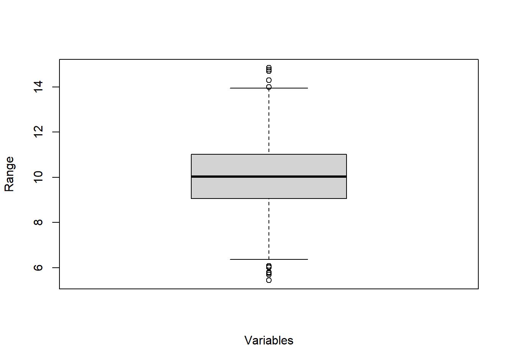

4 Data cleaning
- always precedes further statistical analyses!
- can significantly increase the quality of the data used
- should always be the first step after data entry or data transfer from external sources
The validity of results of statistical data analyses depends on the quality of the data:
- sampling (number of cases, representativeness, etc.)
- research design
- quality of the survey instrument
- operationalization
- data preparation
Steps in data cleaning include:
When cleaning the data set, you should never replace the raw data with processed data.
Besides functions included in R Base (R Core Team 2023), the dplyr package (Wickham, François, et al. 2023) provides a set of functions for manipulating data. dplyr functions include the pipe operator (|>, in previous versions %>%).
The tidyverse style guide suggests using the pipe operator “to emphasize a sequence of actions”. See Chapter 4 of the guide for more information on how to use pipes.
4.1 Control of unit-identifiers
Identification variables (ID variables) are of great importance when dealing with study data. A suitable ID assignment should already be planned before the data collection.
Purpose: Identify duplicates
Procedure:
- Find duplicate IDs
- Exclude duplicates (consultation with supervisors!)
Since our example data set does not contain an ID variable, we modify the data set to illustrate this step of data cleaning. This data manipulation is done using the dplyr package (Wickham, François, et al. 2023).
The duplicated() function checks for each value whether it is duplicated. The output is logical vector. In combination with the which() function, checking which indices are TRUE, we can extract the duplicates.
Show/hide code
exDat_ID[which(duplicated(exDat_ID$id)), ] id msc1 msc2 msc3 msc4 age sex edu
1201 120 3 2 3 2 9.562434 0 1
1931 193 1 2 4 4 10.898386 0 2
2091 209 2 2 3 2 9.748836 1 2
3201 320 3 3 2 1 9.966598 NA 3
4941 494 2 2 3 3 NA 1 3By negating the function (!duplicated()), duplicates can be excluded.
Show/hide code
exDat_ID[which(!duplicated(exDat_ID$id)), ] id msc1 msc2 msc3 msc4 age sex edu
1 1 2 3 2 2 9.815538 0 0
2 2 3 2 1 1 8.980194 1 0
3 3 2 2 3 3 12.758157 0 0
4 4 2 2 3 2 10.578846 0 0
5 5 3 2 2 2 9.894364 1 0
6 6 3 3 3 2 10.446850 0 0
7 7 4 4 1 2 10.897605 1 0
8 8 3 3 2 1 7.977382 1 0
9 9 3 3 2 1 10.688379 NA 0
10 10 3 3 2 2 9.105864 0 0
11 11 2 1 3 3 8.540117 0 0
12 12 2 2 3 3 11.841954 0 0
13 13 2 2 3 4 11.647655 0 0
14 14 2 3 3 3 11.745306 0 0
15 15 2 3 3 3 9.970630 0 0
16 16 3 3 2 1 8.186501 NA 0
17 17 2 2 2 2 7.773473 1 0
18 18 2 2 3 2 NA 1 0
19 19 2 2 3 3 9.339448 0 0
20 20 4 4 1 1 NA 1 0
21 21 4 3 2 2 9.831947 0 0
22 22 2 3 3 3 9.890266 1 0
23 23 2 3 2 2 11.501609 0 0
24 24 2 NA 3 2 9.341404 0 0
25 25 3 3 2 2 11.540030 1 0
26 26 2 3 3 3 10.098491 1 0
27 27 4 3 2 2 10.851320 1 0
28 28 3 2 2 2 6.735228 1 0
29 29 3 4 2 2 10.690059 1 0
30 30 3 2 2 3 9.746659 1 0
31 31 2 1 4 4 8.983450 0 0
32 32 2 NA 3 3 11.557894 0 0
33 33 2 2 3 2 8.057455 1 0
34 34 2 2 3 3 10.134752 0 0
35 35 2 3 3 2 8.096160 0 0
36 36 4 3 1 1 9.404151 NA 0
37 37 3 3 3 3 12.156118 0 0
38 38 2 2 3 2 9.600157 0 0
39 39 2 3 3 3 11.591400 0 0
40 40 3 4 2 2 10.691193 1 0
41 41 3 3 3 2 12.622380 0 0
42 42 3 2 2 2 10.043774 1 0
43 43 4 3 2 2 8.452508 0 0
44 44 4 3 2 2 12.029754 1 0
45 45 3 2 3 3 8.213722 1 0
46 46 2 3 2 3 11.654911 0 0
47 47 4 3 1 1 9.086209 1 0
48 48 3 NA 3 3 9.535470 1 0
49 49 2 3 3 3 9.617718 0 0
50 50 2 3 2 2 10.347768 1 0
51 51 2 1 3 3 10.735626 0 1
52 52 3 3 3 2 10.903281 1 1
53 53 2 NA 3 3 10.265831 1 1
54 54 2 3 4 3 10.824752 0 1
55 55 3 3 3 3 9.282584 0 1
56 56 2 3 2 2 NA 0 1
57 57 2 3 3 3 8.747505 1 1
58 58 2 2 3 4 8.992998 1 1
59 59 2 2 3 3 12.632563 1 1
60 60 2 2 3 3 11.015445 1 1
61 61 3 3 2 2 9.529734 1 1
62 62 4 3 1 1 11.569437 1 1
63 63 4 3 2 2 11.626011 1 1
64 64 2 NA 3 3 12.371110 0 1
65 65 2 2 2 3 8.712209 1 1
66 66 1 2 3 2 12.271368 0 1
67 67 3 3 2 2 11.514336 1 1
68 68 4 4 2 1 NA 0 1
69 69 2 2 2 2 10.858827 1 1
70 70 2 2 3 4 11.416986 0 1
71 71 2 NA 1 2 10.722411 0 1
72 72 2 3 3 3 9.417725 1 1
73 73 4 3 1 2 10.788379 1 1
74 74 2 3 2 2 7.527881 1 1
75 75 2 2 3 3 7.697320 0 1
76 76 3 4 3 2 9.723288 1 1
77 77 2 2 3 3 8.457035 NA 1
78 78 3 3 3 3 9.552697 1 1
79 79 3 3 3 3 10.766935 1 1
80 80 3 NA 2 2 8.086932 1 1
81 81 2 3 2 2 10.027268 0 1
82 82 4 3 2 2 11.108152 1 1
83 83 3 3 2 2 9.364853 1 1
84 84 2 NA 4 4 9.229549 0 1
85 85 4 3 1 1 8.791437 0 1
86 86 2 2 3 3 14.699514 1 1
87 87 1 2 4 3 9.310963 0 1
88 88 2 NA 2 2 7.862333 0 1
89 89 3 4 1 2 9.164070 0 1
90 90 3 2 3 2 9.904690 0 1
91 91 1 2 3 3 9.949049 0 1
92 92 1 2 3 2 10.874213 0 1
93 93 2 3 3 3 9.589440 0 1
94 94 2 2 3 3 8.396720 0 1
95 95 1 2 3 3 8.633062 1 1
96 96 3 4 2 2 10.174559 1 1
97 97 3 2 2 2 NA 1 1
98 98 4 3 2 2 6.022669 1 1
99 99 3 3 2 2 10.701638 1 1
100 100 3 NA 2 2 NA 0 1
101 101 2 3 3 3 11.536565 0 1
102 102 3 3 2 3 NA 1 1
103 103 2 2 3 3 7.082311 1 1
104 104 3 3 2 3 7.990254 1 1
105 105 2 2 3 3 13.223930 1 1
106 106 2 3 2 3 8.847114 0 1
107 107 2 NA 3 3 11.477532 0 1
108 108 3 4 1 1 8.809008 NA 1
109 109 2 2 3 2 8.917741 1 1
110 110 2 2 3 4 9.059646 0 1
111 111 2 2 3 3 NA 1 1
112 112 2 NA 2 2 7.801995 1 1
113 113 2 NA 3 3 NA 1 1
114 114 4 3 1 1 NA 1 1
115 115 2 2 3 3 8.336241 0 1
116 116 3 3 2 2 12.158201 1 1
117 117 2 2 2 3 NA 1 1
118 118 2 2 4 3 11.067872 1 1
119 119 3 NA 2 2 11.700517 0 1
120 120 3 2 3 2 9.562434 0 1
121 121 3 3 3 2 8.977396 0 1
122 122 3 2 3 2 10.162202 0 1
123 123 3 3 3 2 9.885336 0 1
124 124 3 2 3 3 12.560990 1 1
125 125 2 2 4 4 11.087431 1 1
126 126 3 3 4 3 10.371456 1 1
127 127 3 4 1 2 9.319275 1 1
128 128 2 2 2 3 11.008828 1 1
129 129 1 2 3 2 9.656535 0 1
130 130 1 2 3 4 10.032404 0 1
131 131 2 2 3 3 6.974716 1 1
132 132 3 2 2 3 9.168019 1 1
133 133 2 1 3 4 10.658201 1 1
134 134 3 2 2 2 10.723573 1 1
135 135 1 2 4 3 9.564175 1 1
136 136 2 3 3 2 9.440463 1 1
137 137 1 2 3 4 8.574188 1 1
138 138 2 2 3 3 8.336412 0 1
139 139 3 2 2 2 11.316498 0 1
140 140 4 3 2 2 10.089194 1 1
141 141 3 3 2 2 11.326115 0 1
142 142 2 3 2 2 10.544879 1 1
143 143 4 3 2 2 8.278763 0 1
144 144 3 3 2 2 9.165442 0 1
145 145 3 4 2 2 14.840083 0 1
146 146 4 4 1 1 9.177470 0 1
147 147 2 3 1 1 10.392509 1 1
148 148 3 3 2 3 10.074265 1 1
149 149 2 NA 2 2 10.394414 0 1
150 150 2 3 2 2 NA 0 1
151 151 2 2 3 3 11.303224 0 2
152 152 3 3 2 2 8.301101 0 2
153 153 3 4 2 2 11.552966 1 2
154 154 3 3 2 2 10.420355 1 2
155 155 3 4 2 2 12.648300 1 2
156 156 2 2 3 2 9.985757 1 2
157 157 2 3 2 2 10.504636 0 2
158 158 1 NA 4 4 NA 1 2
159 159 2 2 3 3 9.576623 0 2
160 160 3 3 2 2 12.855773 1 2
161 161 2 1 3 4 10.131071 0 2
162 162 2 3 3 3 11.018442 1 2
163 163 3 3 2 2 10.910317 1 2
164 164 1 NA 3 4 9.682431 0 2
165 165 3 2 3 3 10.402108 1 2
166 166 2 2 3 2 11.020302 0 2
167 167 2 2 3 3 10.862003 1 2
168 168 3 NA 2 1 12.021632 0 2
169 169 2 NA 2 3 11.145560 1 2
170 170 3 NA 1 2 11.157485 1 2
171 171 3 3 2 1 11.156488 1 2
172 172 1 2 3 3 11.774043 0 2
173 173 3 2 3 2 9.014673 0 2
174 174 4 4 1 1 9.755259 1 2
175 175 3 3 3 3 7.710862 0 2
176 176 1 1 4 4 11.418964 1 2
177 177 1 2 4 3 10.702477 0 2
178 178 3 2 3 2 11.237905 1 2
179 179 3 1 2 2 9.225546 0 2
180 180 3 3 2 2 9.673228 0 2
181 181 2 3 2 2 9.358897 0 2
182 182 3 2 3 3 9.252146 1 2
183 183 2 2 3 3 8.616693 0 2
184 184 3 4 2 2 10.721936 0 2
185 185 3 3 2 2 11.054393 0 2
186 186 1 1 4 4 8.094315 1 2
187 187 3 3 1 2 9.231779 0 2
188 188 3 3 2 2 8.547865 1 2
189 189 3 3 3 3 10.345779 0 2
190 190 1 2 3 3 13.226910 NA 2
191 191 2 2 3 4 10.411992 0 2
192 192 3 3 2 3 8.971620 1 2
193 193 1 2 4 4 10.898386 0 2
194 194 2 2 3 3 10.625394 1 2
195 195 2 2 3 4 6.357136 0 2
196 196 1 2 3 3 12.102026 1 2
197 197 2 3 3 2 NA 0 2
198 198 2 3 3 3 6.586317 1 2
199 199 3 3 3 2 9.050529 1 2
200 200 2 2 3 3 12.723541 1 2
201 201 2 2 3 3 9.753327 NA 2
202 202 2 2 2 2 13.303115 1 2
203 203 2 3 2 2 NA 0 2
204 204 3 3 2 2 11.445677 0 2
205 205 2 2 2 2 9.306572 0 2
206 206 3 1 3 3 8.328087 0 2
207 207 3 4 1 2 10.359319 0 2
208 208 4 3 1 1 NA 0 2
209 209 2 2 3 2 9.748836 1 2
210 210 2 2 3 3 11.357677 0 2
211 211 3 3 2 2 9.790493 1 2
212 212 3 3 3 3 8.325024 0 2
213 213 2 2 2 2 9.281008 1 2
214 214 3 2 2 2 13.164568 0 2
215 215 2 2 2 2 7.828867 0 2
216 216 3 3 3 3 10.665805 0 2
217 217 2 1 3 3 10.635206 1 2
218 218 2 NA 3 2 7.969089 1 2
219 219 2 2 2 3 8.923574 0 2
220 220 2 2 2 2 7.883175 NA 2
221 221 4 NA 2 1 8.577328 1 2
222 222 2 NA 4 4 8.257213 1 2
223 223 3 3 3 2 10.397873 1 2
224 224 4 3 2 2 10.241358 1 2
225 225 3 3 2 1 9.874614 1 2
226 226 2 3 2 2 9.251216 0 2
227 227 3 2 2 2 11.927287 0 2
228 228 4 4 2 2 10.327432 0 2
229 229 3 2 3 2 6.475004 0 2
230 230 2 3 3 3 11.338842 0 2
231 231 2 3 2 2 NA 1 2
232 232 3 3 2 2 7.933710 0 2
233 233 2 3 3 3 10.721250 1 2
234 234 3 2 3 3 8.086553 0 2
235 235 2 3 3 3 12.252961 NA 2
236 236 3 3 2 2 9.883740 NA 2
237 237 2 2 2 3 11.260712 0 2
238 238 4 3 2 1 NA 1 2
239 239 3 NA 2 2 13.991412 1 2
240 240 2 3 2 3 9.606693 1 2
241 241 2 2 2 2 9.965807 1 2
242 242 3 3 2 2 6.665730 NA 2
243 243 2 2 2 2 11.588374 1 2
244 244 2 1 3 3 12.054486 0 2
245 245 2 1 3 2 8.551229 1 2
246 246 1 1 4 4 14.758472 1 2
247 247 3 3 2 1 10.601619 1 2
248 248 2 3 2 3 9.608768 1 2
249 249 2 2 3 4 10.631563 0 2
250 250 3 4 1 1 9.195155 0 2
251 251 3 2 3 3 12.153778 1 2
252 252 2 1 4 4 11.594112 1 2
253 253 3 3 2 2 12.749052 0 2
254 254 2 1 3 3 10.904641 1 2
255 255 2 2 3 3 9.674235 NA 2
256 256 3 3 1 1 9.382583 1 2
257 257 2 2 4 3 10.075463 1 2
258 258 1 1 3 2 NA 0 2
259 259 3 NA 3 3 NA 1 2
260 260 3 3 2 2 10.003249 0 2
261 261 2 2 3 3 10.357645 0 2
262 262 1 2 3 3 11.427154 0 2
263 263 1 2 4 3 11.141758 1 2
264 264 2 2 3 3 11.717822 0 2
265 265 3 3 2 1 8.591719 1 2
266 266 4 3 2 2 7.199316 1 2
267 267 2 2 3 3 8.511259 NA 2
268 268 1 NA 4 4 13.183838 1 2
269 269 3 NA 2 2 9.723661 0 2
270 270 3 2 1 1 9.901684 1 2
271 271 2 2 2 3 11.543191 1 2
272 272 3 2 3 2 9.905296 0 2
273 273 3 3 2 2 10.804370 0 2
274 274 3 3 1 1 9.135004 1 2
275 275 3 NA 2 2 9.937281 1 2
276 276 2 2 4 4 8.449205 NA 2
277 277 4 4 2 2 10.110370 1 2
278 278 2 3 3 3 8.910521 1 2
279 279 3 3 2 2 11.335096 0 2
280 280 2 3 3 3 10.872968 1 2
281 281 3 3 2 2 9.550622 0 2
282 282 1 NA 4 4 NA 1 2
283 283 1 NA 3 4 12.176753 0 2
284 284 2 2 2 2 9.628909 0 2
285 285 2 2 3 3 13.948810 0 2
286 286 2 NA 3 3 12.154323 1 2
287 287 3 2 2 2 9.487855 1 2
288 288 3 3 3 2 10.250928 0 2
289 289 3 2 3 3 10.038493 0 2
290 290 3 2 2 2 9.110477 NA 2
291 291 3 3 2 3 11.294503 1 2
292 292 2 2 3 3 12.974758 0 2
293 293 3 3 2 2 10.285506 0 2
294 294 3 2 3 3 10.156128 1 2
295 295 3 4 3 3 10.477511 0 2
296 296 2 2 3 4 11.463436 0 2
297 297 2 3 2 2 10.958489 0 2
298 298 3 2 2 2 8.164545 0 2
299 299 2 3 3 3 10.140617 0 2
300 300 3 NA 2 2 9.653269 1 2
301 301 1 1 3 3 NA 0 3
302 302 2 3 2 3 9.384978 1 3
303 303 2 2 3 3 7.993749 1 3
304 304 2 3 3 3 6.955896 1 3
305 305 4 3 2 2 10.535078 0 3
306 306 4 3 1 2 NA 1 3
307 307 2 2 2 2 9.815517 NA 3
308 308 4 4 1 1 10.504347 1 3
309 309 2 3 2 2 9.939982 0 3
310 310 3 3 3 3 10.389400 1 3
311 311 2 2 3 3 9.448678 1 3
312 312 2 4 1 2 10.221263 1 3
313 313 2 NA 2 2 7.693476 0 3
314 314 3 3 2 1 11.177018 1 3
315 315 2 2 3 2 9.339305 0 3
316 316 3 2 2 2 6.542470 1 3
317 317 4 3 1 2 8.953333 1 3
318 318 3 2 3 3 NA 0 3
319 319 2 1 3 3 7.581036 0 3
320 320 3 3 2 1 9.966598 NA 3
321 321 3 2 3 3 10.881096 1 3
322 322 2 2 4 3 9.503126 1 3
323 323 3 3 2 2 10.542913 1 3
324 324 2 1 4 3 7.226064 1 3
325 325 2 2 3 3 NA 0 3
326 326 3 3 1 2 10.473550 1 3
327 327 3 2 2 2 NA 1 3
328 328 3 3 2 2 10.490264 0 3
329 329 3 3 2 1 11.740022 1 3
330 330 3 3 2 2 11.473238 0 3
331 331 3 3 2 3 12.689666 NA 3
332 332 3 3 2 2 NA 0 3
333 333 3 3 2 2 7.619042 0 3
334 334 3 2 2 2 9.525225 1 3
335 335 3 2 2 2 9.301695 1 3
336 336 1 1 4 4 10.235494 1 3
337 337 3 2 2 3 NA 0 3
338 338 3 2 3 3 10.078303 0 3
339 339 3 3 2 2 NA 1 3
340 340 2 3 2 2 9.613427 0 3
341 341 2 3 2 2 10.440469 1 3
342 342 1 2 4 3 NA 0 3
343 343 2 2 3 3 9.632019 0 3
344 344 3 NA 2 1 11.285079 0 3
345 345 3 4 2 2 12.780121 NA 3
346 346 3 3 2 3 10.358045 0 3
347 347 3 3 2 3 9.452587 0 3
348 348 2 2 3 3 10.616298 0 3
349 349 2 2 3 4 10.531881 1 3
350 350 3 2 3 3 10.917065 0 3
351 351 3 4 2 2 6.753558 1 3
352 352 3 3 1 1 9.081102 1 3
353 353 2 2 3 3 9.324282 0 3
354 354 3 4 2 2 9.556236 1 3
355 355 3 3 2 3 8.404846 1 3
356 356 3 3 2 2 9.835171 1 3
357 357 3 3 2 1 NA 1 3
358 358 3 3 2 2 9.347660 1 3
359 359 2 NA 3 3 7.015727 0 3
360 360 3 3 2 2 8.146446 0 3
361 361 3 3 1 2 7.774709 1 3
362 362 3 3 2 2 6.083013 1 3
363 363 2 3 3 3 8.618334 1 3
364 364 2 NA 3 2 10.029465 0 3
365 365 3 NA 2 1 10.539754 1 3
366 366 2 3 3 3 11.498595 0 3
367 367 2 2 4 4 NA 0 3
368 368 3 4 2 2 11.885905 0 3
369 369 2 1 3 3 10.151313 0 3
370 370 2 3 2 3 8.703436 1 3
371 371 1 2 3 4 11.715882 1 3
372 372 2 2 3 3 10.497316 NA 3
373 373 2 2 3 2 9.260014 0 3
374 374 2 1 4 4 12.764876 0 3
375 375 2 3 3 3 11.855908 0 3
376 376 2 2 3 3 11.346669 1 3
377 377 2 3 3 2 10.437059 0 3
378 378 3 3 2 3 NA 0 3
379 379 3 NA 2 2 8.338840 1 3
380 380 3 2 2 3 11.449698 0 3
381 381 3 3 2 2 NA 0 3
382 382 2 NA 2 2 10.331462 0 3
383 383 3 3 2 1 10.240093 1 3
384 384 3 3 3 3 12.629684 0 3
385 385 3 3 2 2 10.858224 0 3
386 386 2 3 3 3 NA 1 3
387 387 2 3 3 3 11.439490 NA 3
388 388 3 3 2 2 8.881271 1 3
389 389 3 NA 3 3 10.293081 1 3
390 390 3 3 3 3 10.192251 0 3
391 391 3 3 1 2 11.065900 0 3
392 392 3 3 2 2 10.998406 1 3
393 393 2 2 3 2 8.552346 1 3
394 394 4 3 1 2 9.412805 0 3
395 395 2 2 3 3 9.894383 NA 3
396 396 1 2 3 3 NA 1 3
397 397 3 3 2 2 NA 1 3
398 398 3 2 3 3 9.242431 1 3
399 399 2 2 3 3 10.957836 NA 3
400 400 3 3 3 3 10.084902 1 3
401 401 3 2 2 2 10.097882 0 3
402 402 3 3 1 1 11.672478 0 3
403 403 3 4 2 1 13.353267 0 3
404 404 1 2 4 4 10.107733 0 3
405 405 2 3 3 3 10.847647 0 3
406 406 3 3 1 1 8.989002 1 3
407 407 4 3 2 2 9.767775 0 3
408 408 3 3 3 2 8.104969 1 3
409 409 3 3 2 2 11.940227 0 3
410 410 2 1 4 3 8.396467 1 3
411 411 2 NA 2 3 9.219042 0 3
412 412 2 2 2 3 9.927729 1 3
413 413 3 3 2 2 9.120070 0 3
414 414 3 2 2 2 9.359507 1 3
415 415 3 2 3 3 7.340234 0 3
416 416 3 3 2 2 8.565667 1 3
417 417 3 2 2 3 11.829203 1 3
418 418 2 2 2 2 9.444976 1 3
419 419 1 1 4 4 8.163760 1 3
420 420 1 2 2 3 7.971904 0 3
421 421 2 2 2 3 NA 1 3
422 422 2 2 3 2 10.435981 1 3
423 423 1 2 3 3 11.167197 0 3
424 424 4 3 2 2 9.076633 0 3
425 425 3 3 2 2 9.734855 0 3
426 426 3 3 1 1 9.520808 0 3
427 427 2 2 2 2 8.750194 0 3
428 428 2 2 3 3 10.203757 1 3
429 429 3 3 2 2 8.855370 0 3
430 430 3 2 3 2 13.023492 1 3
431 431 3 3 3 2 NA 0 3
432 432 3 2 3 2 NA NA 3
433 433 2 2 3 4 8.328651 1 3
434 434 3 2 3 2 9.358613 0 3
435 435 4 3 2 2 11.184436 0 3
436 436 2 2 4 3 10.608993 NA 3
437 437 2 NA 3 3 12.301002 0 3
438 438 3 3 2 2 NA 0 3
439 439 4 4 1 1 9.609236 0 3
440 440 2 3 2 2 9.303808 0 3
441 441 3 3 2 2 10.739005 0 3
442 442 3 3 3 3 NA 0 3
443 443 2 3 3 3 10.028578 1 3
444 444 4 4 2 2 10.703093 1 3
445 445 3 4 2 2 NA 1 3
446 446 3 2 3 3 10.775893 1 3
447 447 2 2 3 3 10.714497 0 3
448 448 3 2 2 2 9.476227 0 3
449 449 4 NA 1 1 7.254288 1 3
450 450 2 2 3 2 5.788306 NA 3
451 451 3 3 2 2 9.860913 0 3
452 452 3 4 1 2 9.406198 1 3
453 453 3 3 2 2 7.358570 0 3
454 454 3 4 2 2 9.143064 1 3
455 455 3 4 2 2 11.833885 0 3
456 456 2 2 4 3 10.510292 1 3
457 457 4 3 2 2 11.219608 1 3
458 458 2 2 3 3 13.257474 0 3
459 459 2 2 3 4 7.569693 0 3
460 460 2 2 4 3 11.684286 1 3
461 461 1 2 4 4 10.056906 NA 3
462 462 2 2 3 3 9.203611 1 3
463 463 2 2 3 3 11.462454 1 3
464 464 3 2 3 3 8.608740 1 3
465 465 3 3 3 2 8.550825 0 3
466 466 2 2 3 3 NA 1 3
467 467 2 NA 3 3 9.467938 1 3
468 468 3 3 2 2 9.638242 0 3
469 469 4 3 2 2 11.559736 0 3
470 470 2 3 2 2 9.289579 1 3
471 471 2 2 4 3 10.660731 0 3
472 472 1 2 4 4 8.653708 1 3
473 473 3 NA 2 3 11.267748 0 3
474 474 3 NA 2 2 6.386290 0 3
475 475 2 2 2 2 10.394297 0 3
476 476 3 3 2 2 NA 1 3
477 477 2 1 3 3 11.588138 1 3
478 478 3 2 3 3 9.701818 1 3
479 479 2 2 3 3 10.131820 0 3
480 480 3 2 2 3 11.851048 0 3
481 481 2 2 3 3 8.094906 0 3
482 482 2 3 2 3 6.522122 0 3
483 483 2 NA 4 4 9.492688 1 3
484 484 3 2 2 2 7.171610 1 3
485 485 4 3 1 2 10.449040 1 3
486 486 3 3 2 2 8.565564 1 3
487 487 2 3 2 3 9.692163 0 3
488 488 2 3 3 2 10.544790 0 3
489 489 1 1 4 4 9.152848 1 3
490 490 3 NA 2 3 11.417658 0 3
491 491 2 NA 3 3 10.335521 1 3
492 492 3 4 2 2 12.157326 1 3
493 493 2 2 4 3 8.071642 1 3
494 494 2 2 3 3 NA 1 3
495 495 2 2 2 2 NA 0 3
496 496 2 2 2 2 9.657121 1 3
497 497 2 2 3 3 8.421820 1 3
498 498 2 2 3 2 11.234864 0 3
499 499 3 3 3 2 11.684493 1 3
500 500 2 NA 3 3 10.551730 1 3
501 501 3 2 3 3 9.518572 0 4
502 502 2 NA 2 2 NA 0 4
503 503 3 2 2 2 9.394796 1 4
504 504 3 2 2 2 10.871842 0 4
505 505 3 3 1 1 11.807168 1 4
506 506 4 4 2 2 NA 0 4
507 507 2 3 3 3 11.295793 0 4
508 508 3 2 3 3 9.704389 1 4
509 509 3 3 2 1 12.982000 1 4
510 510 3 2 2 3 8.051677 0 4
511 511 2 3 3 3 10.134297 1 4
512 512 2 3 2 2 10.915921 0 4
513 513 4 3 2 3 9.464469 NA 4
514 514 3 2 3 3 9.377179 1 4
515 515 2 NA 3 3 6.628830 0 4
516 516 2 2 3 3 9.799799 0 4
517 517 2 2 3 3 9.352013 0 4
518 518 3 2 3 3 7.578805 0 4
519 519 2 3 3 2 8.955748 0 4
520 520 3 3 1 2 7.345759 1 4
521 521 2 3 3 2 9.038828 0 4
522 522 3 2 3 3 6.462564 0 4
523 523 3 3 2 2 8.710578 0 4
524 524 2 2 3 3 8.078165 1 4
525 525 3 3 3 3 9.308461 0 4
526 526 2 3 3 2 9.621561 0 4
527 527 2 3 2 2 10.468559 1 4
528 528 2 2 4 3 12.527006 0 4
529 529 1 1 4 4 9.713401 0 4
530 530 2 3 2 3 12.449355 1 4
531 531 4 3 1 2 10.171527 1 4
532 532 2 2 4 3 11.592511 1 4
533 533 2 2 3 3 9.746639 0 4
534 534 2 2 2 3 11.539024 0 4
535 535 3 4 1 1 12.662389 1 4
536 536 3 3 2 2 8.558018 1 4
537 537 3 4 1 2 12.490442 0 4
538 538 3 4 2 2 8.849825 1 4
539 539 3 3 3 3 NA 1 4
540 540 2 2 2 3 9.856794 1 4
541 541 1 2 3 4 NA 1 4
542 542 2 3 2 3 10.455994 0 4
543 543 3 3 1 2 8.953355 0 4
544 544 3 3 2 2 10.233466 1 4
545 545 2 NA 3 2 11.345757 0 4
546 546 3 3 2 1 11.511366 0 4
547 547 3 3 2 2 7.030045 0 4
548 548 2 1 4 4 11.833564 0 4
549 549 2 NA 4 3 10.347853 0 4
550 550 2 3 2 2 10.669845 1 4
551 551 3 3 3 2 11.945497 0 4
552 552 3 3 1 1 7.631776 0 4
553 553 2 2 3 3 7.929047 0 4
554 554 2 3 2 2 10.655136 1 4
555 555 4 4 1 1 11.651111 1 4
556 556 3 3 2 2 9.499631 0 4
557 557 2 3 2 3 9.869376 1 4
558 558 3 3 1 2 10.573739 0 4
559 559 2 2 3 4 6.777733 0 4
560 560 3 3 2 1 10.292540 0 4
561 561 3 2 3 2 8.420615 0 4
562 562 3 NA 1 1 NA 0 4
563 563 3 3 2 2 NA 0 4
564 564 3 NA 2 2 11.011815 NA 4
565 565 3 3 2 2 9.567283 1 4
566 566 3 2 2 2 9.700664 1 4
567 567 2 2 4 3 9.035493 1 4
568 568 2 2 3 3 6.920118 0 4
569 569 3 NA 2 2 12.785713 0 4
570 570 3 3 3 2 NA 0 4
571 571 4 4 1 1 11.561428 0 4
572 572 3 2 2 2 10.479614 1 4
573 573 3 2 2 3 12.062231 0 4
574 574 3 3 3 2 11.258923 1 4
575 575 2 2 3 3 8.535113 1 4
576 576 3 2 2 2 12.190370 NA 4
577 577 3 3 2 2 9.513192 0 4
578 578 3 2 3 4 NA 1 4
579 579 3 3 3 3 NA 1 4
580 580 2 NA 3 3 NA 1 4
581 581 1 2 3 3 7.840196 1 4
582 582 3 2 1 2 NA 0 4
583 583 2 3 3 3 11.716523 1 4
584 584 2 2 3 3 10.115714 0 4
585 585 2 1 2 3 10.487666 1 4
586 586 3 3 2 2 10.129045 1 4
587 587 4 3 2 2 10.213173 0 4
588 588 1 1 3 3 12.114688 1 4
589 589 2 2 3 3 11.655211 0 4
590 590 1 2 4 4 10.474828 1 4
591 591 2 3 3 2 9.222274 0 4
592 592 3 3 3 3 10.053230 0 4
593 593 2 1 3 3 8.360811 NA 4
594 594 2 2 4 4 NA 1 4
595 595 3 3 3 2 10.611019 0 4
596 596 3 3 2 3 11.952722 NA 4
597 597 2 3 2 2 NA 0 4
598 598 2 3 3 3 12.403272 0 4
599 599 2 2 3 4 NA 1 4
600 600 4 3 1 1 12.933026 0 4
601 601 3 4 2 2 9.675024 NA 4
602 602 3 2 3 3 9.797451 0 4
603 603 3 NA 3 3 NA 1 4
604 604 2 3 3 3 5.697734 1 4
605 605 4 3 3 2 11.315240 0 4
606 606 3 3 2 2 9.398728 0 4
607 607 2 2 3 3 NA 1 4
608 608 3 4 2 1 7.712797 0 4
609 609 4 3 2 2 11.397924 1 4
610 610 2 NA 3 3 10.497554 1 4
611 611 2 NA 2 2 9.537385 0 4
612 612 2 1 4 3 8.434417 1 4
613 613 2 2 3 3 9.741397 1 4
614 614 3 2 2 3 NA 0 4
615 615 2 NA 2 2 10.524864 1 4
616 616 3 3 2 2 8.498451 0 4
617 617 1 2 3 3 10.447842 0 4
618 618 3 3 3 3 6.916193 0 4
619 619 3 2 3 3 7.967729 0 4
620 620 2 2 3 3 10.971877 0 4
621 621 1 2 3 3 10.036674 1 4
622 622 4 4 1 2 11.171656 0 4
623 623 2 2 3 3 9.809559 1 4
624 624 3 2 2 2 8.970928 0 4
625 625 2 2 4 4 10.715082 0 4
626 626 3 3 3 2 7.928970 1 4
627 627 2 3 3 3 6.909529 1 4
628 628 2 3 3 2 10.799244 0 4
629 629 3 NA 2 2 6.011167 0 4
630 630 2 2 2 1 12.505498 0 4
631 631 4 4 1 1 9.779263 1 4
632 632 3 3 2 3 9.474470 0 4
633 633 2 2 3 3 12.139497 0 4
634 634 3 3 3 2 11.067315 0 4
635 635 3 4 2 3 8.320202 0 4
636 636 3 2 2 2 7.182648 1 4
637 637 2 2 4 4 10.130177 0 4
638 638 3 3 3 3 12.496180 0 4
639 639 2 2 3 3 12.592766 0 4
640 640 2 2 2 3 9.907003 0 4
641 641 3 2 3 3 11.737818 1 4
642 642 3 2 2 1 8.821091 0 4
643 643 2 3 3 2 6.860783 0 4
644 644 3 2 3 3 10.268927 1 4
645 645 3 3 2 2 10.266885 1 4
646 646 3 3 2 2 5.763412 0 4
647 647 3 2 2 2 7.066767 1 4
648 648 3 3 3 2 9.180560 0 4
649 649 3 3 2 2 12.972046 1 4
650 650 1 NA 2 3 8.906204 1 4
651 651 3 3 2 2 11.411023 1 4
652 652 2 2 2 3 10.049973 0 4
653 653 2 2 3 2 11.337266 0 4
654 654 3 3 3 3 13.679508 0 4
655 655 2 3 3 3 8.168574 1 4
656 656 3 3 2 2 12.273152 NA 4
657 657 2 3 3 3 9.269406 0 4
658 658 2 3 2 2 NA 1 4
659 659 3 3 2 2 8.932260 1 4
660 660 3 3 1 2 7.922082 0 4
661 661 2 2 3 3 11.825439 0 4
662 662 3 2 2 2 NA 0 4
663 663 2 1 3 3 13.418967 0 4
664 664 3 2 3 3 12.795091 0 4
665 665 2 3 3 3 9.076854 0 4
666 666 2 2 2 2 9.791845 1 4
667 667 2 3 2 2 7.201118 0 4
668 668 2 3 2 2 NA 1 4
669 669 3 3 3 3 11.357964 1 4
670 670 3 3 2 2 10.881354 0 4
671 671 2 1 3 3 10.379563 0 4
672 672 3 2 3 3 NA 1 4
673 673 3 NA 2 2 9.222115 NA 4
674 674 3 3 3 2 8.146615 1 4
675 675 2 3 2 2 9.175585 0 4
676 676 2 2 4 4 12.131668 1 4
677 677 2 NA 2 2 10.870383 0 4
678 678 1 2 3 3 11.473233 1 4
679 679 3 3 2 3 9.506655 1 4
680 680 2 3 2 2 10.030170 0 4
681 681 3 NA 2 2 10.886894 NA 4
682 682 1 1 3 4 10.668823 0 4
683 683 2 3 3 3 9.386863 1 4
684 684 2 2 3 3 7.093356 1 4
685 685 2 2 3 3 12.640182 1 4
686 686 1 2 3 3 8.807493 1 4
687 687 3 3 3 3 14.291764 0 4
688 688 1 1 4 4 NA 0 4
689 689 3 3 2 3 5.439760 0 4
690 690 3 2 2 2 NA 0 4
691 691 2 2 3 3 8.718412 1 4
692 692 3 3 2 2 8.041810 1 4
693 693 3 3 2 2 NA NA 4
694 694 3 2 3 3 10.982985 1 4
695 695 1 2 2 3 10.007353 0 4
696 696 3 2 2 2 8.467930 0 4
697 697 4 4 1 2 10.328330 NA 4
698 698 2 2 3 3 10.826550 1 4
699 699 3 2 2 2 9.543067 1 4
700 700 3 3 1 2 10.025428 1 4
701 701 2 3 3 3 10.668717 1 4
702 702 3 3 3 3 10.518729 1 4
703 703 3 3 2 2 10.808743 1 4
704 704 2 2 2 2 7.725368 1 4
705 705 3 3 2 3 10.498354 1 4
706 706 2 2 2 2 NA 0 4
707 707 3 4 2 2 11.808316 1 4
708 708 2 2 4 4 9.354355 0 4
709 709 1 1 4 4 6.893923 0 4
710 710 2 3 2 3 10.715373 1 4
711 711 4 3 2 2 NA 1 4
712 712 2 3 2 3 10.579138 1 4
713 713 3 2 3 3 7.743470 1 4
714 714 2 2 2 2 NA 1 4
715 715 3 3 1 2 11.443266 1 4
716 716 3 2 3 3 10.739886 0 4
717 717 3 2 3 3 9.666964 NA 4
718 718 3 2 2 2 NA 0 4
719 719 4 3 2 2 9.963483 1 4
720 720 3 3 3 3 12.146356 0 4
721 721 4 NA 1 1 NA 1 4
722 722 1 1 4 4 12.437140 0 4
723 723 3 3 2 2 9.361663 0 4
724 724 3 2 2 2 NA 1 4
725 725 4 3 2 2 10.954406 0 4
726 726 2 3 3 3 8.813882 1 4
727 727 2 2 3 3 8.399134 1 4
728 728 2 3 3 3 NA 0 4
729 729 3 NA 2 2 10.716499 1 4
730 730 2 2 3 3 NA 0 4
731 731 2 NA 3 3 9.827114 0 4
732 732 3 3 2 2 10.646740 1 4
733 733 2 4 2 1 10.350377 0 4
734 734 3 3 2 2 10.019486 1 4
735 735 3 2 2 2 9.739026 1 4
736 736 2 3 3 4 8.826410 0 4
737 737 2 2 3 3 8.191695 1 4
738 738 2 2 3 3 9.700108 0 4
739 739 2 2 3 3 8.267847 0 4
740 740 3 4 2 2 8.238960 1 4
741 741 3 4 2 3 8.657699 1 4
742 742 2 2 3 3 12.724873 1 4
743 743 1 1 3 3 9.056560 1 4
744 744 2 1 3 3 10.776392 1 4
745 745 3 2 2 3 11.332372 0 4
746 746 3 3 2 2 9.605044 0 4
747 747 3 3 2 2 12.553403 0 4
748 748 3 3 3 2 8.607291 1 4
749 749 2 2 4 3 NA 0 4
750 750 3 3 3 2 12.253184 1 4Filtering can be done using the dplyr::filter() function in combination with duplicated().
Show/hide code
exDat_ID |>
dplyr::filter(duplicated(id)) id msc1 msc2 msc3 msc4 age sex edu
1201 120 3 2 3 2 9.562434 0 1
1931 193 1 2 4 4 10.898386 0 2
2091 209 2 2 3 2 9.748836 1 2
3201 320 3 3 2 1 9.966598 NA 3
4941 494 2 2 3 3 NA 1 3However, dplyr provides a function dplyr::distinct() which can be used to keep only unique rows.
Show/hide code
dplyr::distinct(exDat_ID) id msc1 msc2 msc3 msc4 age sex edu
1 1 2 3 2 2 9.815538 0 0
2 2 3 2 1 1 8.980194 1 0
3 3 2 2 3 3 12.758157 0 0
4 4 2 2 3 2 10.578846 0 0
5 5 3 2 2 2 9.894364 1 0
6 6 3 3 3 2 10.446850 0 0
7 7 4 4 1 2 10.897605 1 0
8 8 3 3 2 1 7.977382 1 0
9 9 3 3 2 1 10.688379 NA 0
10 10 3 3 2 2 9.105864 0 0
11 11 2 1 3 3 8.540117 0 0
12 12 2 2 3 3 11.841954 0 0
13 13 2 2 3 4 11.647655 0 0
14 14 2 3 3 3 11.745306 0 0
15 15 2 3 3 3 9.970630 0 0
16 16 3 3 2 1 8.186501 NA 0
17 17 2 2 2 2 7.773473 1 0
18 18 2 2 3 2 NA 1 0
19 19 2 2 3 3 9.339448 0 0
20 20 4 4 1 1 NA 1 0
21 21 4 3 2 2 9.831947 0 0
22 22 2 3 3 3 9.890266 1 0
23 23 2 3 2 2 11.501609 0 0
24 24 2 NA 3 2 9.341404 0 0
25 25 3 3 2 2 11.540030 1 0
26 26 2 3 3 3 10.098491 1 0
27 27 4 3 2 2 10.851320 1 0
28 28 3 2 2 2 6.735228 1 0
29 29 3 4 2 2 10.690059 1 0
30 30 3 2 2 3 9.746659 1 0
31 31 2 1 4 4 8.983450 0 0
32 32 2 NA 3 3 11.557894 0 0
33 33 2 2 3 2 8.057455 1 0
34 34 2 2 3 3 10.134752 0 0
35 35 2 3 3 2 8.096160 0 0
36 36 4 3 1 1 9.404151 NA 0
37 37 3 3 3 3 12.156118 0 0
38 38 2 2 3 2 9.600157 0 0
39 39 2 3 3 3 11.591400 0 0
40 40 3 4 2 2 10.691193 1 0
41 41 3 3 3 2 12.622380 0 0
42 42 3 2 2 2 10.043774 1 0
43 43 4 3 2 2 8.452508 0 0
44 44 4 3 2 2 12.029754 1 0
45 45 3 2 3 3 8.213722 1 0
46 46 2 3 2 3 11.654911 0 0
47 47 4 3 1 1 9.086209 1 0
48 48 3 NA 3 3 9.535470 1 0
49 49 2 3 3 3 9.617718 0 0
50 50 2 3 2 2 10.347768 1 0
51 51 2 1 3 3 10.735626 0 1
52 52 3 3 3 2 10.903281 1 1
53 53 2 NA 3 3 10.265831 1 1
54 54 2 3 4 3 10.824752 0 1
55 55 3 3 3 3 9.282584 0 1
56 56 2 3 2 2 NA 0 1
57 57 2 3 3 3 8.747505 1 1
58 58 2 2 3 4 8.992998 1 1
59 59 2 2 3 3 12.632563 1 1
60 60 2 2 3 3 11.015445 1 1
61 61 3 3 2 2 9.529734 1 1
62 62 4 3 1 1 11.569437 1 1
63 63 4 3 2 2 11.626011 1 1
64 64 2 NA 3 3 12.371110 0 1
65 65 2 2 2 3 8.712209 1 1
66 66 1 2 3 2 12.271368 0 1
67 67 3 3 2 2 11.514336 1 1
68 68 4 4 2 1 NA 0 1
69 69 2 2 2 2 10.858827 1 1
70 70 2 2 3 4 11.416986 0 1
71 71 2 NA 1 2 10.722411 0 1
72 72 2 3 3 3 9.417725 1 1
73 73 4 3 1 2 10.788379 1 1
74 74 2 3 2 2 7.527881 1 1
75 75 2 2 3 3 7.697320 0 1
76 76 3 4 3 2 9.723288 1 1
77 77 2 2 3 3 8.457035 NA 1
78 78 3 3 3 3 9.552697 1 1
79 79 3 3 3 3 10.766935 1 1
80 80 3 NA 2 2 8.086932 1 1
81 81 2 3 2 2 10.027268 0 1
82 82 4 3 2 2 11.108152 1 1
83 83 3 3 2 2 9.364853 1 1
84 84 2 NA 4 4 9.229549 0 1
85 85 4 3 1 1 8.791437 0 1
86 86 2 2 3 3 14.699514 1 1
87 87 1 2 4 3 9.310963 0 1
88 88 2 NA 2 2 7.862333 0 1
89 89 3 4 1 2 9.164070 0 1
90 90 3 2 3 2 9.904690 0 1
91 91 1 2 3 3 9.949049 0 1
92 92 1 2 3 2 10.874213 0 1
93 93 2 3 3 3 9.589440 0 1
94 94 2 2 3 3 8.396720 0 1
95 95 1 2 3 3 8.633062 1 1
96 96 3 4 2 2 10.174559 1 1
97 97 3 2 2 2 NA 1 1
98 98 4 3 2 2 6.022669 1 1
99 99 3 3 2 2 10.701638 1 1
100 100 3 NA 2 2 NA 0 1
101 101 2 3 3 3 11.536565 0 1
102 102 3 3 2 3 NA 1 1
103 103 2 2 3 3 7.082311 1 1
104 104 3 3 2 3 7.990254 1 1
105 105 2 2 3 3 13.223930 1 1
106 106 2 3 2 3 8.847114 0 1
107 107 2 NA 3 3 11.477532 0 1
108 108 3 4 1 1 8.809008 NA 1
109 109 2 2 3 2 8.917741 1 1
110 110 2 2 3 4 9.059646 0 1
111 111 2 2 3 3 NA 1 1
112 112 2 NA 2 2 7.801995 1 1
113 113 2 NA 3 3 NA 1 1
114 114 4 3 1 1 NA 1 1
115 115 2 2 3 3 8.336241 0 1
116 116 3 3 2 2 12.158201 1 1
117 117 2 2 2 3 NA 1 1
118 118 2 2 4 3 11.067872 1 1
119 119 3 NA 2 2 11.700517 0 1
120 120 3 2 3 2 9.562434 0 1
121 121 3 3 3 2 8.977396 0 1
122 122 3 2 3 2 10.162202 0 1
123 123 3 3 3 2 9.885336 0 1
124 124 3 2 3 3 12.560990 1 1
125 125 2 2 4 4 11.087431 1 1
126 126 3 3 4 3 10.371456 1 1
127 127 3 4 1 2 9.319275 1 1
128 128 2 2 2 3 11.008828 1 1
129 129 1 2 3 2 9.656535 0 1
130 130 1 2 3 4 10.032404 0 1
131 131 2 2 3 3 6.974716 1 1
132 132 3 2 2 3 9.168019 1 1
133 133 2 1 3 4 10.658201 1 1
134 134 3 2 2 2 10.723573 1 1
135 135 1 2 4 3 9.564175 1 1
136 136 2 3 3 2 9.440463 1 1
137 137 1 2 3 4 8.574188 1 1
138 138 2 2 3 3 8.336412 0 1
139 139 3 2 2 2 11.316498 0 1
140 140 4 3 2 2 10.089194 1 1
141 141 3 3 2 2 11.326115 0 1
142 142 2 3 2 2 10.544879 1 1
143 143 4 3 2 2 8.278763 0 1
144 144 3 3 2 2 9.165442 0 1
145 145 3 4 2 2 14.840083 0 1
146 146 4 4 1 1 9.177470 0 1
147 147 2 3 1 1 10.392509 1 1
148 148 3 3 2 3 10.074265 1 1
149 149 2 NA 2 2 10.394414 0 1
150 150 2 3 2 2 NA 0 1
151 151 2 2 3 3 11.303224 0 2
152 152 3 3 2 2 8.301101 0 2
153 153 3 4 2 2 11.552966 1 2
154 154 3 3 2 2 10.420355 1 2
155 155 3 4 2 2 12.648300 1 2
156 156 2 2 3 2 9.985757 1 2
157 157 2 3 2 2 10.504636 0 2
158 158 1 NA 4 4 NA 1 2
159 159 2 2 3 3 9.576623 0 2
160 160 3 3 2 2 12.855773 1 2
161 161 2 1 3 4 10.131071 0 2
162 162 2 3 3 3 11.018442 1 2
163 163 3 3 2 2 10.910317 1 2
164 164 1 NA 3 4 9.682431 0 2
165 165 3 2 3 3 10.402108 1 2
166 166 2 2 3 2 11.020302 0 2
167 167 2 2 3 3 10.862003 1 2
168 168 3 NA 2 1 12.021632 0 2
169 169 2 NA 2 3 11.145560 1 2
170 170 3 NA 1 2 11.157485 1 2
171 171 3 3 2 1 11.156488 1 2
172 172 1 2 3 3 11.774043 0 2
173 173 3 2 3 2 9.014673 0 2
174 174 4 4 1 1 9.755259 1 2
175 175 3 3 3 3 7.710862 0 2
176 176 1 1 4 4 11.418964 1 2
177 177 1 2 4 3 10.702477 0 2
178 178 3 2 3 2 11.237905 1 2
179 179 3 1 2 2 9.225546 0 2
180 180 3 3 2 2 9.673228 0 2
181 181 2 3 2 2 9.358897 0 2
182 182 3 2 3 3 9.252146 1 2
183 183 2 2 3 3 8.616693 0 2
184 184 3 4 2 2 10.721936 0 2
185 185 3 3 2 2 11.054393 0 2
186 186 1 1 4 4 8.094315 1 2
187 187 3 3 1 2 9.231779 0 2
188 188 3 3 2 2 8.547865 1 2
189 189 3 3 3 3 10.345779 0 2
190 190 1 2 3 3 13.226910 NA 2
191 191 2 2 3 4 10.411992 0 2
192 192 3 3 2 3 8.971620 1 2
193 193 1 2 4 4 10.898386 0 2
194 194 2 2 3 3 10.625394 1 2
195 195 2 2 3 4 6.357136 0 2
196 196 1 2 3 3 12.102026 1 2
197 197 2 3 3 2 NA 0 2
198 198 2 3 3 3 6.586317 1 2
199 199 3 3 3 2 9.050529 1 2
200 200 2 2 3 3 12.723541 1 2
201 201 2 2 3 3 9.753327 NA 2
202 202 2 2 2 2 13.303115 1 2
203 203 2 3 2 2 NA 0 2
204 204 3 3 2 2 11.445677 0 2
205 205 2 2 2 2 9.306572 0 2
206 206 3 1 3 3 8.328087 0 2
207 207 3 4 1 2 10.359319 0 2
208 208 4 3 1 1 NA 0 2
209 209 2 2 3 2 9.748836 1 2
210 210 2 2 3 3 11.357677 0 2
211 211 3 3 2 2 9.790493 1 2
212 212 3 3 3 3 8.325024 0 2
213 213 2 2 2 2 9.281008 1 2
214 214 3 2 2 2 13.164568 0 2
215 215 2 2 2 2 7.828867 0 2
216 216 3 3 3 3 10.665805 0 2
217 217 2 1 3 3 10.635206 1 2
218 218 2 NA 3 2 7.969089 1 2
219 219 2 2 2 3 8.923574 0 2
220 220 2 2 2 2 7.883175 NA 2
221 221 4 NA 2 1 8.577328 1 2
222 222 2 NA 4 4 8.257213 1 2
223 223 3 3 3 2 10.397873 1 2
224 224 4 3 2 2 10.241358 1 2
225 225 3 3 2 1 9.874614 1 2
226 226 2 3 2 2 9.251216 0 2
227 227 3 2 2 2 11.927287 0 2
228 228 4 4 2 2 10.327432 0 2
229 229 3 2 3 2 6.475004 0 2
230 230 2 3 3 3 11.338842 0 2
231 231 2 3 2 2 NA 1 2
232 232 3 3 2 2 7.933710 0 2
233 233 2 3 3 3 10.721250 1 2
234 234 3 2 3 3 8.086553 0 2
235 235 2 3 3 3 12.252961 NA 2
236 236 3 3 2 2 9.883740 NA 2
237 237 2 2 2 3 11.260712 0 2
238 238 4 3 2 1 NA 1 2
239 239 3 NA 2 2 13.991412 1 2
240 240 2 3 2 3 9.606693 1 2
241 241 2 2 2 2 9.965807 1 2
242 242 3 3 2 2 6.665730 NA 2
243 243 2 2 2 2 11.588374 1 2
244 244 2 1 3 3 12.054486 0 2
245 245 2 1 3 2 8.551229 1 2
246 246 1 1 4 4 14.758472 1 2
247 247 3 3 2 1 10.601619 1 2
248 248 2 3 2 3 9.608768 1 2
249 249 2 2 3 4 10.631563 0 2
250 250 3 4 1 1 9.195155 0 2
251 251 3 2 3 3 12.153778 1 2
252 252 2 1 4 4 11.594112 1 2
253 253 3 3 2 2 12.749052 0 2
254 254 2 1 3 3 10.904641 1 2
255 255 2 2 3 3 9.674235 NA 2
256 256 3 3 1 1 9.382583 1 2
257 257 2 2 4 3 10.075463 1 2
258 258 1 1 3 2 NA 0 2
259 259 3 NA 3 3 NA 1 2
260 260 3 3 2 2 10.003249 0 2
261 261 2 2 3 3 10.357645 0 2
262 262 1 2 3 3 11.427154 0 2
263 263 1 2 4 3 11.141758 1 2
264 264 2 2 3 3 11.717822 0 2
265 265 3 3 2 1 8.591719 1 2
266 266 4 3 2 2 7.199316 1 2
267 267 2 2 3 3 8.511259 NA 2
268 268 1 NA 4 4 13.183838 1 2
269 269 3 NA 2 2 9.723661 0 2
270 270 3 2 1 1 9.901684 1 2
271 271 2 2 2 3 11.543191 1 2
272 272 3 2 3 2 9.905296 0 2
273 273 3 3 2 2 10.804370 0 2
274 274 3 3 1 1 9.135004 1 2
275 275 3 NA 2 2 9.937281 1 2
276 276 2 2 4 4 8.449205 NA 2
277 277 4 4 2 2 10.110370 1 2
278 278 2 3 3 3 8.910521 1 2
279 279 3 3 2 2 11.335096 0 2
280 280 2 3 3 3 10.872968 1 2
281 281 3 3 2 2 9.550622 0 2
282 282 1 NA 4 4 NA 1 2
283 283 1 NA 3 4 12.176753 0 2
284 284 2 2 2 2 9.628909 0 2
285 285 2 2 3 3 13.948810 0 2
286 286 2 NA 3 3 12.154323 1 2
287 287 3 2 2 2 9.487855 1 2
288 288 3 3 3 2 10.250928 0 2
289 289 3 2 3 3 10.038493 0 2
290 290 3 2 2 2 9.110477 NA 2
291 291 3 3 2 3 11.294503 1 2
292 292 2 2 3 3 12.974758 0 2
293 293 3 3 2 2 10.285506 0 2
294 294 3 2 3 3 10.156128 1 2
295 295 3 4 3 3 10.477511 0 2
296 296 2 2 3 4 11.463436 0 2
297 297 2 3 2 2 10.958489 0 2
298 298 3 2 2 2 8.164545 0 2
299 299 2 3 3 3 10.140617 0 2
300 300 3 NA 2 2 9.653269 1 2
301 301 1 1 3 3 NA 0 3
302 302 2 3 2 3 9.384978 1 3
303 303 2 2 3 3 7.993749 1 3
304 304 2 3 3 3 6.955896 1 3
305 305 4 3 2 2 10.535078 0 3
306 306 4 3 1 2 NA 1 3
307 307 2 2 2 2 9.815517 NA 3
308 308 4 4 1 1 10.504347 1 3
309 309 2 3 2 2 9.939982 0 3
310 310 3 3 3 3 10.389400 1 3
311 311 2 2 3 3 9.448678 1 3
312 312 2 4 1 2 10.221263 1 3
313 313 2 NA 2 2 7.693476 0 3
314 314 3 3 2 1 11.177018 1 3
315 315 2 2 3 2 9.339305 0 3
316 316 3 2 2 2 6.542470 1 3
317 317 4 3 1 2 8.953333 1 3
318 318 3 2 3 3 NA 0 3
319 319 2 1 3 3 7.581036 0 3
320 320 3 3 2 1 9.966598 NA 3
321 321 3 2 3 3 10.881096 1 3
322 322 2 2 4 3 9.503126 1 3
323 323 3 3 2 2 10.542913 1 3
324 324 2 1 4 3 7.226064 1 3
325 325 2 2 3 3 NA 0 3
326 326 3 3 1 2 10.473550 1 3
327 327 3 2 2 2 NA 1 3
328 328 3 3 2 2 10.490264 0 3
329 329 3 3 2 1 11.740022 1 3
330 330 3 3 2 2 11.473238 0 3
331 331 3 3 2 3 12.689666 NA 3
332 332 3 3 2 2 NA 0 3
333 333 3 3 2 2 7.619042 0 3
334 334 3 2 2 2 9.525225 1 3
335 335 3 2 2 2 9.301695 1 3
336 336 1 1 4 4 10.235494 1 3
337 337 3 2 2 3 NA 0 3
338 338 3 2 3 3 10.078303 0 3
339 339 3 3 2 2 NA 1 3
340 340 2 3 2 2 9.613427 0 3
341 341 2 3 2 2 10.440469 1 3
342 342 1 2 4 3 NA 0 3
343 343 2 2 3 3 9.632019 0 3
344 344 3 NA 2 1 11.285079 0 3
345 345 3 4 2 2 12.780121 NA 3
346 346 3 3 2 3 10.358045 0 3
347 347 3 3 2 3 9.452587 0 3
348 348 2 2 3 3 10.616298 0 3
349 349 2 2 3 4 10.531881 1 3
350 350 3 2 3 3 10.917065 0 3
351 351 3 4 2 2 6.753558 1 3
352 352 3 3 1 1 9.081102 1 3
353 353 2 2 3 3 9.324282 0 3
354 354 3 4 2 2 9.556236 1 3
355 355 3 3 2 3 8.404846 1 3
356 356 3 3 2 2 9.835171 1 3
357 357 3 3 2 1 NA 1 3
358 358 3 3 2 2 9.347660 1 3
359 359 2 NA 3 3 7.015727 0 3
360 360 3 3 2 2 8.146446 0 3
361 361 3 3 1 2 7.774709 1 3
362 362 3 3 2 2 6.083013 1 3
363 363 2 3 3 3 8.618334 1 3
364 364 2 NA 3 2 10.029465 0 3
365 365 3 NA 2 1 10.539754 1 3
366 366 2 3 3 3 11.498595 0 3
367 367 2 2 4 4 NA 0 3
368 368 3 4 2 2 11.885905 0 3
369 369 2 1 3 3 10.151313 0 3
370 370 2 3 2 3 8.703436 1 3
371 371 1 2 3 4 11.715882 1 3
372 372 2 2 3 3 10.497316 NA 3
373 373 2 2 3 2 9.260014 0 3
374 374 2 1 4 4 12.764876 0 3
375 375 2 3 3 3 11.855908 0 3
376 376 2 2 3 3 11.346669 1 3
377 377 2 3 3 2 10.437059 0 3
378 378 3 3 2 3 NA 0 3
379 379 3 NA 2 2 8.338840 1 3
380 380 3 2 2 3 11.449698 0 3
381 381 3 3 2 2 NA 0 3
382 382 2 NA 2 2 10.331462 0 3
383 383 3 3 2 1 10.240093 1 3
384 384 3 3 3 3 12.629684 0 3
385 385 3 3 2 2 10.858224 0 3
386 386 2 3 3 3 NA 1 3
387 387 2 3 3 3 11.439490 NA 3
388 388 3 3 2 2 8.881271 1 3
389 389 3 NA 3 3 10.293081 1 3
390 390 3 3 3 3 10.192251 0 3
391 391 3 3 1 2 11.065900 0 3
392 392 3 3 2 2 10.998406 1 3
393 393 2 2 3 2 8.552346 1 3
394 394 4 3 1 2 9.412805 0 3
395 395 2 2 3 3 9.894383 NA 3
396 396 1 2 3 3 NA 1 3
397 397 3 3 2 2 NA 1 3
398 398 3 2 3 3 9.242431 1 3
399 399 2 2 3 3 10.957836 NA 3
400 400 3 3 3 3 10.084902 1 3
401 401 3 2 2 2 10.097882 0 3
402 402 3 3 1 1 11.672478 0 3
403 403 3 4 2 1 13.353267 0 3
404 404 1 2 4 4 10.107733 0 3
405 405 2 3 3 3 10.847647 0 3
406 406 3 3 1 1 8.989002 1 3
407 407 4 3 2 2 9.767775 0 3
408 408 3 3 3 2 8.104969 1 3
409 409 3 3 2 2 11.940227 0 3
410 410 2 1 4 3 8.396467 1 3
411 411 2 NA 2 3 9.219042 0 3
412 412 2 2 2 3 9.927729 1 3
413 413 3 3 2 2 9.120070 0 3
414 414 3 2 2 2 9.359507 1 3
415 415 3 2 3 3 7.340234 0 3
416 416 3 3 2 2 8.565667 1 3
417 417 3 2 2 3 11.829203 1 3
418 418 2 2 2 2 9.444976 1 3
419 419 1 1 4 4 8.163760 1 3
420 420 1 2 2 3 7.971904 0 3
421 421 2 2 2 3 NA 1 3
422 422 2 2 3 2 10.435981 1 3
423 423 1 2 3 3 11.167197 0 3
424 424 4 3 2 2 9.076633 0 3
425 425 3 3 2 2 9.734855 0 3
426 426 3 3 1 1 9.520808 0 3
427 427 2 2 2 2 8.750194 0 3
428 428 2 2 3 3 10.203757 1 3
429 429 3 3 2 2 8.855370 0 3
430 430 3 2 3 2 13.023492 1 3
431 431 3 3 3 2 NA 0 3
432 432 3 2 3 2 NA NA 3
433 433 2 2 3 4 8.328651 1 3
434 434 3 2 3 2 9.358613 0 3
435 435 4 3 2 2 11.184436 0 3
436 436 2 2 4 3 10.608993 NA 3
437 437 2 NA 3 3 12.301002 0 3
438 438 3 3 2 2 NA 0 3
439 439 4 4 1 1 9.609236 0 3
440 440 2 3 2 2 9.303808 0 3
441 441 3 3 2 2 10.739005 0 3
442 442 3 3 3 3 NA 0 3
443 443 2 3 3 3 10.028578 1 3
444 444 4 4 2 2 10.703093 1 3
445 445 3 4 2 2 NA 1 3
446 446 3 2 3 3 10.775893 1 3
447 447 2 2 3 3 10.714497 0 3
448 448 3 2 2 2 9.476227 0 3
449 449 4 NA 1 1 7.254288 1 3
450 450 2 2 3 2 5.788306 NA 3
451 451 3 3 2 2 9.860913 0 3
452 452 3 4 1 2 9.406198 1 3
453 453 3 3 2 2 7.358570 0 3
454 454 3 4 2 2 9.143064 1 3
455 455 3 4 2 2 11.833885 0 3
456 456 2 2 4 3 10.510292 1 3
457 457 4 3 2 2 11.219608 1 3
458 458 2 2 3 3 13.257474 0 3
459 459 2 2 3 4 7.569693 0 3
460 460 2 2 4 3 11.684286 1 3
461 461 1 2 4 4 10.056906 NA 3
462 462 2 2 3 3 9.203611 1 3
463 463 2 2 3 3 11.462454 1 3
464 464 3 2 3 3 8.608740 1 3
465 465 3 3 3 2 8.550825 0 3
466 466 2 2 3 3 NA 1 3
467 467 2 NA 3 3 9.467938 1 3
468 468 3 3 2 2 9.638242 0 3
469 469 4 3 2 2 11.559736 0 3
470 470 2 3 2 2 9.289579 1 3
471 471 2 2 4 3 10.660731 0 3
472 472 1 2 4 4 8.653708 1 3
473 473 3 NA 2 3 11.267748 0 3
474 474 3 NA 2 2 6.386290 0 3
475 475 2 2 2 2 10.394297 0 3
476 476 3 3 2 2 NA 1 3
477 477 2 1 3 3 11.588138 1 3
478 478 3 2 3 3 9.701818 1 3
479 479 2 2 3 3 10.131820 0 3
480 480 3 2 2 3 11.851048 0 3
481 481 2 2 3 3 8.094906 0 3
482 482 2 3 2 3 6.522122 0 3
483 483 2 NA 4 4 9.492688 1 3
484 484 3 2 2 2 7.171610 1 3
485 485 4 3 1 2 10.449040 1 3
486 486 3 3 2 2 8.565564 1 3
487 487 2 3 2 3 9.692163 0 3
488 488 2 3 3 2 10.544790 0 3
489 489 1 1 4 4 9.152848 1 3
490 490 3 NA 2 3 11.417658 0 3
491 491 2 NA 3 3 10.335521 1 3
492 492 3 4 2 2 12.157326 1 3
493 493 2 2 4 3 8.071642 1 3
494 494 2 2 3 3 NA 1 3
495 495 2 2 2 2 NA 0 3
496 496 2 2 2 2 9.657121 1 3
497 497 2 2 3 3 8.421820 1 3
498 498 2 2 3 2 11.234864 0 3
499 499 3 3 3 2 11.684493 1 3
500 500 2 NA 3 3 10.551730 1 3
501 501 3 2 3 3 9.518572 0 4
502 502 2 NA 2 2 NA 0 4
503 503 3 2 2 2 9.394796 1 4
504 504 3 2 2 2 10.871842 0 4
505 505 3 3 1 1 11.807168 1 4
506 506 4 4 2 2 NA 0 4
507 507 2 3 3 3 11.295793 0 4
508 508 3 2 3 3 9.704389 1 4
509 509 3 3 2 1 12.982000 1 4
510 510 3 2 2 3 8.051677 0 4
511 511 2 3 3 3 10.134297 1 4
512 512 2 3 2 2 10.915921 0 4
513 513 4 3 2 3 9.464469 NA 4
514 514 3 2 3 3 9.377179 1 4
515 515 2 NA 3 3 6.628830 0 4
516 516 2 2 3 3 9.799799 0 4
517 517 2 2 3 3 9.352013 0 4
518 518 3 2 3 3 7.578805 0 4
519 519 2 3 3 2 8.955748 0 4
520 520 3 3 1 2 7.345759 1 4
521 521 2 3 3 2 9.038828 0 4
522 522 3 2 3 3 6.462564 0 4
523 523 3 3 2 2 8.710578 0 4
524 524 2 2 3 3 8.078165 1 4
525 525 3 3 3 3 9.308461 0 4
526 526 2 3 3 2 9.621561 0 4
527 527 2 3 2 2 10.468559 1 4
528 528 2 2 4 3 12.527006 0 4
529 529 1 1 4 4 9.713401 0 4
530 530 2 3 2 3 12.449355 1 4
531 531 4 3 1 2 10.171527 1 4
532 532 2 2 4 3 11.592511 1 4
533 533 2 2 3 3 9.746639 0 4
534 534 2 2 2 3 11.539024 0 4
535 535 3 4 1 1 12.662389 1 4
536 536 3 3 2 2 8.558018 1 4
537 537 3 4 1 2 12.490442 0 4
538 538 3 4 2 2 8.849825 1 4
539 539 3 3 3 3 NA 1 4
540 540 2 2 2 3 9.856794 1 4
541 541 1 2 3 4 NA 1 4
542 542 2 3 2 3 10.455994 0 4
543 543 3 3 1 2 8.953355 0 4
544 544 3 3 2 2 10.233466 1 4
545 545 2 NA 3 2 11.345757 0 4
546 546 3 3 2 1 11.511366 0 4
547 547 3 3 2 2 7.030045 0 4
548 548 2 1 4 4 11.833564 0 4
549 549 2 NA 4 3 10.347853 0 4
550 550 2 3 2 2 10.669845 1 4
551 551 3 3 3 2 11.945497 0 4
552 552 3 3 1 1 7.631776 0 4
553 553 2 2 3 3 7.929047 0 4
554 554 2 3 2 2 10.655136 1 4
555 555 4 4 1 1 11.651111 1 4
556 556 3 3 2 2 9.499631 0 4
557 557 2 3 2 3 9.869376 1 4
558 558 3 3 1 2 10.573739 0 4
559 559 2 2 3 4 6.777733 0 4
560 560 3 3 2 1 10.292540 0 4
561 561 3 2 3 2 8.420615 0 4
562 562 3 NA 1 1 NA 0 4
563 563 3 3 2 2 NA 0 4
564 564 3 NA 2 2 11.011815 NA 4
565 565 3 3 2 2 9.567283 1 4
566 566 3 2 2 2 9.700664 1 4
567 567 2 2 4 3 9.035493 1 4
568 568 2 2 3 3 6.920118 0 4
569 569 3 NA 2 2 12.785713 0 4
570 570 3 3 3 2 NA 0 4
571 571 4 4 1 1 11.561428 0 4
572 572 3 2 2 2 10.479614 1 4
573 573 3 2 2 3 12.062231 0 4
574 574 3 3 3 2 11.258923 1 4
575 575 2 2 3 3 8.535113 1 4
576 576 3 2 2 2 12.190370 NA 4
577 577 3 3 2 2 9.513192 0 4
578 578 3 2 3 4 NA 1 4
579 579 3 3 3 3 NA 1 4
580 580 2 NA 3 3 NA 1 4
581 581 1 2 3 3 7.840196 1 4
582 582 3 2 1 2 NA 0 4
583 583 2 3 3 3 11.716523 1 4
584 584 2 2 3 3 10.115714 0 4
585 585 2 1 2 3 10.487666 1 4
586 586 3 3 2 2 10.129045 1 4
587 587 4 3 2 2 10.213173 0 4
588 588 1 1 3 3 12.114688 1 4
589 589 2 2 3 3 11.655211 0 4
590 590 1 2 4 4 10.474828 1 4
591 591 2 3 3 2 9.222274 0 4
592 592 3 3 3 3 10.053230 0 4
593 593 2 1 3 3 8.360811 NA 4
594 594 2 2 4 4 NA 1 4
595 595 3 3 3 2 10.611019 0 4
596 596 3 3 2 3 11.952722 NA 4
597 597 2 3 2 2 NA 0 4
598 598 2 3 3 3 12.403272 0 4
599 599 2 2 3 4 NA 1 4
600 600 4 3 1 1 12.933026 0 4
601 601 3 4 2 2 9.675024 NA 4
602 602 3 2 3 3 9.797451 0 4
603 603 3 NA 3 3 NA 1 4
604 604 2 3 3 3 5.697734 1 4
605 605 4 3 3 2 11.315240 0 4
606 606 3 3 2 2 9.398728 0 4
607 607 2 2 3 3 NA 1 4
608 608 3 4 2 1 7.712797 0 4
609 609 4 3 2 2 11.397924 1 4
610 610 2 NA 3 3 10.497554 1 4
611 611 2 NA 2 2 9.537385 0 4
612 612 2 1 4 3 8.434417 1 4
613 613 2 2 3 3 9.741397 1 4
614 614 3 2 2 3 NA 0 4
615 615 2 NA 2 2 10.524864 1 4
616 616 3 3 2 2 8.498451 0 4
617 617 1 2 3 3 10.447842 0 4
618 618 3 3 3 3 6.916193 0 4
619 619 3 2 3 3 7.967729 0 4
620 620 2 2 3 3 10.971877 0 4
621 621 1 2 3 3 10.036674 1 4
622 622 4 4 1 2 11.171656 0 4
623 623 2 2 3 3 9.809559 1 4
624 624 3 2 2 2 8.970928 0 4
625 625 2 2 4 4 10.715082 0 4
626 626 3 3 3 2 7.928970 1 4
627 627 2 3 3 3 6.909529 1 4
628 628 2 3 3 2 10.799244 0 4
629 629 3 NA 2 2 6.011167 0 4
630 630 2 2 2 1 12.505498 0 4
631 631 4 4 1 1 9.779263 1 4
632 632 3 3 2 3 9.474470 0 4
633 633 2 2 3 3 12.139497 0 4
634 634 3 3 3 2 11.067315 0 4
635 635 3 4 2 3 8.320202 0 4
636 636 3 2 2 2 7.182648 1 4
637 637 2 2 4 4 10.130177 0 4
638 638 3 3 3 3 12.496180 0 4
639 639 2 2 3 3 12.592766 0 4
640 640 2 2 2 3 9.907003 0 4
641 641 3 2 3 3 11.737818 1 4
642 642 3 2 2 1 8.821091 0 4
643 643 2 3 3 2 6.860783 0 4
644 644 3 2 3 3 10.268927 1 4
645 645 3 3 2 2 10.266885 1 4
646 646 3 3 2 2 5.763412 0 4
647 647 3 2 2 2 7.066767 1 4
648 648 3 3 3 2 9.180560 0 4
649 649 3 3 2 2 12.972046 1 4
650 650 1 NA 2 3 8.906204 1 4
651 651 3 3 2 2 11.411023 1 4
652 652 2 2 2 3 10.049973 0 4
653 653 2 2 3 2 11.337266 0 4
654 654 3 3 3 3 13.679508 0 4
655 655 2 3 3 3 8.168574 1 4
656 656 3 3 2 2 12.273152 NA 4
657 657 2 3 3 3 9.269406 0 4
658 658 2 3 2 2 NA 1 4
659 659 3 3 2 2 8.932260 1 4
660 660 3 3 1 2 7.922082 0 4
661 661 2 2 3 3 11.825439 0 4
662 662 3 2 2 2 NA 0 4
663 663 2 1 3 3 13.418967 0 4
664 664 3 2 3 3 12.795091 0 4
665 665 2 3 3 3 9.076854 0 4
666 666 2 2 2 2 9.791845 1 4
667 667 2 3 2 2 7.201118 0 4
668 668 2 3 2 2 NA 1 4
669 669 3 3 3 3 11.357964 1 4
670 670 3 3 2 2 10.881354 0 4
671 671 2 1 3 3 10.379563 0 4
672 672 3 2 3 3 NA 1 4
673 673 3 NA 2 2 9.222115 NA 4
674 674 3 3 3 2 8.146615 1 4
675 675 2 3 2 2 9.175585 0 4
676 676 2 2 4 4 12.131668 1 4
677 677 2 NA 2 2 10.870383 0 4
678 678 1 2 3 3 11.473233 1 4
679 679 3 3 2 3 9.506655 1 4
680 680 2 3 2 2 10.030170 0 4
681 681 3 NA 2 2 10.886894 NA 4
682 682 1 1 3 4 10.668823 0 4
683 683 2 3 3 3 9.386863 1 4
684 684 2 2 3 3 7.093356 1 4
685 685 2 2 3 3 12.640182 1 4
686 686 1 2 3 3 8.807493 1 4
687 687 3 3 3 3 14.291764 0 4
688 688 1 1 4 4 NA 0 4
689 689 3 3 2 3 5.439760 0 4
690 690 3 2 2 2 NA 0 4
691 691 2 2 3 3 8.718412 1 4
692 692 3 3 2 2 8.041810 1 4
693 693 3 3 2 2 NA NA 4
694 694 3 2 3 3 10.982985 1 4
695 695 1 2 2 3 10.007353 0 4
696 696 3 2 2 2 8.467930 0 4
697 697 4 4 1 2 10.328330 NA 4
698 698 2 2 3 3 10.826550 1 4
699 699 3 2 2 2 9.543067 1 4
700 700 3 3 1 2 10.025428 1 4
701 701 2 3 3 3 10.668717 1 4
702 702 3 3 3 3 10.518729 1 4
703 703 3 3 2 2 10.808743 1 4
704 704 2 2 2 2 7.725368 1 4
705 705 3 3 2 3 10.498354 1 4
706 706 2 2 2 2 NA 0 4
707 707 3 4 2 2 11.808316 1 4
708 708 2 2 4 4 9.354355 0 4
709 709 1 1 4 4 6.893923 0 4
710 710 2 3 2 3 10.715373 1 4
711 711 4 3 2 2 NA 1 4
712 712 2 3 2 3 10.579138 1 4
713 713 3 2 3 3 7.743470 1 4
714 714 2 2 2 2 NA 1 4
715 715 3 3 1 2 11.443266 1 4
716 716 3 2 3 3 10.739886 0 4
717 717 3 2 3 3 9.666964 NA 4
718 718 3 2 2 2 NA 0 4
719 719 4 3 2 2 9.963483 1 4
720 720 3 3 3 3 12.146356 0 4
721 721 4 NA 1 1 NA 1 4
722 722 1 1 4 4 12.437140 0 4
723 723 3 3 2 2 9.361663 0 4
724 724 3 2 2 2 NA 1 4
725 725 4 3 2 2 10.954406 0 4
726 726 2 3 3 3 8.813882 1 4
727 727 2 2 3 3 8.399134 1 4
728 728 2 3 3 3 NA 0 4
729 729 3 NA 2 2 10.716499 1 4
730 730 2 2 3 3 NA 0 4
731 731 2 NA 3 3 9.827114 0 4
732 732 3 3 2 2 10.646740 1 4
733 733 2 4 2 1 10.350377 0 4
734 734 3 3 2 2 10.019486 1 4
735 735 3 2 2 2 9.739026 1 4
736 736 2 3 3 4 8.826410 0 4
737 737 2 2 3 3 8.191695 1 4
738 738 2 2 3 3 9.700108 0 4
739 739 2 2 3 3 8.267847 0 4
740 740 3 4 2 2 8.238960 1 4
741 741 3 4 2 3 8.657699 1 4
742 742 2 2 3 3 12.724873 1 4
743 743 1 1 3 3 9.056560 1 4
744 744 2 1 3 3 10.776392 1 4
745 745 3 2 2 3 11.332372 0 4
746 746 3 3 2 2 9.605044 0 4
747 747 3 3 2 2 12.553403 0 4
748 748 3 3 3 2 8.607291 1 4
749 749 2 2 4 3 NA 0 4
750 750 3 3 3 2 12.253184 1 4Remove all duplicates contained in exampleDat_ID.RDS and assign the dataFrame to an object named exDat_uniqueID.
4.2 Examining missing data
Especially with questionnaires and surveys, it often happens that values are missing because, for example, a field of the questionnaire was not filled in. Therefore, it is important to look at the data and get an overview of missing values. By missing values, we refer to cells that could have a value, but whose value is not available (see Data Types.
Procedure:
4.2.1 Check for missing values
For this part of the data cleaning process, the dplyr package offers no particular advantages over R Base.
The summary() function that gives an overview of the quartils, the mean and the amount of NAs of each variable of the given dataFrame.
Show/hide code
summary(exDat) msc1 msc2 msc3 msc4
Min. :1.000 Min. :1.000 Min. :1.000 Min. :1.00
1st Qu.:2.000 1st Qu.:2.000 1st Qu.:2.000 1st Qu.:2.00
Median :3.000 Median :3.000 Median :2.000 Median :2.00
Mean :2.519 Mean :2.544 Mean :2.488 Mean :2.48
3rd Qu.:3.000 3rd Qu.:3.000 3rd Qu.:3.000 3rd Qu.:3.00
Max. :4.000 Max. :4.000 Max. :4.000 Max. :4.00
NA's :70
age sex edu
Min. : 5.440 Min. :0.0000 Min. :0.000
1st Qu.: 9.052 1st Qu.:0.0000 1st Qu.:2.000
Median :10.030 Median :0.0000 Median :3.000
Mean :10.009 Mean :0.4979 Mean :2.667
3rd Qu.:11.018 3rd Qu.:1.0000 3rd Qu.:4.000
Max. :14.840 Max. :1.0000 Max. :4.000
NA's :80 NA's :39 When considering a single variable, the sum of cells with missing values can be calculated using the function sum().
4.2.2 Define missing values
Especially when working with SPSS generated data or character variables, missing values may not be encoded as NAs, but for example as empty characters (i.e. "" or " ") or as numerics like -99 or -88. If you notice that a variable contains missing values that are not defined as NA, you should recode the corresponding values.
Show/hide code
exDat[exDat == -99] <- NAdplyr::na_if() can be used to convert a specific value contained in a variable to NA.
Show/hide code
exDat$age <- dplyr::na_if(exDat$age, -99)4.2.3 Exclude missing values
By negating the is.na() function, those rows that do not contain NAs on a variable are kept.
na.omit() returns only those rows in a dataFrame which do not contain any NAs.
Show/hide code
na.omit(exDat) msc1 msc2 msc3 msc4 age sex edu
1 2 3 2 2 9.815538 0 0
2 3 2 1 1 8.980194 1 0
3 2 2 3 3 12.758157 0 0
4 2 2 3 2 10.578846 0 0
5 3 2 2 2 9.894364 1 0
6 3 3 3 2 10.446850 0 0
7 4 4 1 2 10.897605 1 0
8 3 3 2 1 7.977382 1 0
10 3 3 2 2 9.105864 0 0
11 2 1 3 3 8.540117 0 0
12 2 2 3 3 11.841954 0 0
13 2 2 3 4 11.647655 0 0
14 2 3 3 3 11.745306 0 0
15 2 3 3 3 9.970630 0 0
17 2 2 2 2 7.773473 1 0
19 2 2 3 3 9.339448 0 0
21 4 3 2 2 9.831947 0 0
22 2 3 3 3 9.890266 1 0
23 2 3 2 2 11.501609 0 0
25 3 3 2 2 11.540030 1 0
26 2 3 3 3 10.098491 1 0
27 4 3 2 2 10.851320 1 0
28 3 2 2 2 6.735228 1 0
29 3 4 2 2 10.690059 1 0
30 3 2 2 3 9.746659 1 0
31 2 1 4 4 8.983450 0 0
33 2 2 3 2 8.057455 1 0
34 2 2 3 3 10.134752 0 0
35 2 3 3 2 8.096160 0 0
37 3 3 3 3 12.156118 0 0
38 2 2 3 2 9.600157 0 0
39 2 3 3 3 11.591400 0 0
40 3 4 2 2 10.691193 1 0
41 3 3 3 2 12.622380 0 0
42 3 2 2 2 10.043774 1 0
43 4 3 2 2 8.452508 0 0
44 4 3 2 2 12.029754 1 0
45 3 2 3 3 8.213722 1 0
46 2 3 2 3 11.654911 0 0
47 4 3 1 1 9.086209 1 0
49 2 3 3 3 9.617718 0 0
50 2 3 2 2 10.347768 1 0
51 2 1 3 3 10.735626 0 1
52 3 3 3 2 10.903281 1 1
54 2 3 4 3 10.824752 0 1
55 3 3 3 3 9.282584 0 1
57 2 3 3 3 8.747505 1 1
58 2 2 3 4 8.992998 1 1
59 2 2 3 3 12.632563 1 1
60 2 2 3 3 11.015445 1 1
61 3 3 2 2 9.529734 1 1
62 4 3 1 1 11.569437 1 1
63 4 3 2 2 11.626011 1 1
65 2 2 2 3 8.712209 1 1
66 1 2 3 2 12.271368 0 1
67 3 3 2 2 11.514336 1 1
69 2 2 2 2 10.858827 1 1
70 2 2 3 4 11.416986 0 1
72 2 3 3 3 9.417725 1 1
73 4 3 1 2 10.788379 1 1
74 2 3 2 2 7.527881 1 1
75 2 2 3 3 7.697320 0 1
76 3 4 3 2 9.723288 1 1
78 3 3 3 3 9.552697 1 1
79 3 3 3 3 10.766935 1 1
81 2 3 2 2 10.027268 0 1
82 4 3 2 2 11.108152 1 1
83 3 3 2 2 9.364853 1 1
85 4 3 1 1 8.791437 0 1
86 2 2 3 3 14.699514 1 1
87 1 2 4 3 9.310963 0 1
89 3 4 1 2 9.164070 0 1
90 3 2 3 2 9.904690 0 1
91 1 2 3 3 9.949049 0 1
92 1 2 3 2 10.874213 0 1
93 2 3 3 3 9.589440 0 1
94 2 2 3 3 8.396720 0 1
95 1 2 3 3 8.633062 1 1
96 3 4 2 2 10.174559 1 1
98 4 3 2 2 6.022669 1 1
99 3 3 2 2 10.701638 1 1
101 2 3 3 3 11.536565 0 1
103 2 2 3 3 7.082311 1 1
104 3 3 2 3 7.990254 1 1
105 2 2 3 3 13.223930 1 1
106 2 3 2 3 8.847114 0 1
109 2 2 3 2 8.917741 1 1
110 2 2 3 4 9.059646 0 1
115 2 2 3 3 8.336241 0 1
116 3 3 2 2 12.158201 1 1
118 2 2 4 3 11.067872 1 1
120 3 2 3 2 9.562434 0 1
121 3 3 3 2 8.977396 0 1
122 3 2 3 2 10.162202 0 1
123 3 3 3 2 9.885336 0 1
124 3 2 3 3 12.560990 1 1
125 2 2 4 4 11.087431 1 1
126 3 3 4 3 10.371456 1 1
127 3 4 1 2 9.319275 1 1
128 2 2 2 3 11.008828 1 1
129 1 2 3 2 9.656535 0 1
130 1 2 3 4 10.032404 0 1
131 2 2 3 3 6.974716 1 1
132 3 2 2 3 9.168019 1 1
133 2 1 3 4 10.658201 1 1
134 3 2 2 2 10.723573 1 1
135 1 2 4 3 9.564175 1 1
136 2 3 3 2 9.440463 1 1
137 1 2 3 4 8.574188 1 1
138 2 2 3 3 8.336412 0 1
139 3 2 2 2 11.316498 0 1
140 4 3 2 2 10.089194 1 1
141 3 3 2 2 11.326115 0 1
142 2 3 2 2 10.544879 1 1
143 4 3 2 2 8.278763 0 1
144 3 3 2 2 9.165442 0 1
145 3 4 2 2 14.840083 0 1
146 4 4 1 1 9.177470 0 1
147 2 3 1 1 10.392509 1 1
148 3 3 2 3 10.074265 1 1
151 2 2 3 3 11.303224 0 2
152 3 3 2 2 8.301101 0 2
153 3 4 2 2 11.552966 1 2
154 3 3 2 2 10.420355 1 2
155 3 4 2 2 12.648300 1 2
156 2 2 3 2 9.985757 1 2
157 2 3 2 2 10.504636 0 2
159 2 2 3 3 9.576623 0 2
160 3 3 2 2 12.855773 1 2
161 2 1 3 4 10.131071 0 2
162 2 3 3 3 11.018442 1 2
163 3 3 2 2 10.910317 1 2
165 3 2 3 3 10.402108 1 2
166 2 2 3 2 11.020302 0 2
167 2 2 3 3 10.862003 1 2
171 3 3 2 1 11.156488 1 2
172 1 2 3 3 11.774043 0 2
173 3 2 3 2 9.014673 0 2
174 4 4 1 1 9.755259 1 2
175 3 3 3 3 7.710862 0 2
176 1 1 4 4 11.418964 1 2
177 1 2 4 3 10.702477 0 2
178 3 2 3 2 11.237905 1 2
179 3 1 2 2 9.225546 0 2
180 3 3 2 2 9.673228 0 2
181 2 3 2 2 9.358897 0 2
182 3 2 3 3 9.252146 1 2
183 2 2 3 3 8.616693 0 2
184 3 4 2 2 10.721936 0 2
185 3 3 2 2 11.054393 0 2
186 1 1 4 4 8.094315 1 2
187 3 3 1 2 9.231779 0 2
188 3 3 2 2 8.547865 1 2
189 3 3 3 3 10.345779 0 2
191 2 2 3 4 10.411992 0 2
192 3 3 2 3 8.971620 1 2
193 1 2 4 4 10.898386 0 2
194 2 2 3 3 10.625394 1 2
195 2 2 3 4 6.357136 0 2
196 1 2 3 3 12.102026 1 2
198 2 3 3 3 6.586317 1 2
199 3 3 3 2 9.050529 1 2
200 2 2 3 3 12.723541 1 2
202 2 2 2 2 13.303115 1 2
204 3 3 2 2 11.445677 0 2
205 2 2 2 2 9.306572 0 2
206 3 1 3 3 8.328087 0 2
207 3 4 1 2 10.359319 0 2
209 2 2 3 2 9.748836 1 2
210 2 2 3 3 11.357677 0 2
211 3 3 2 2 9.790493 1 2
212 3 3 3 3 8.325024 0 2
213 2 2 2 2 9.281008 1 2
214 3 2 2 2 13.164568 0 2
215 2 2 2 2 7.828867 0 2
216 3 3 3 3 10.665805 0 2
217 2 1 3 3 10.635206 1 2
219 2 2 2 3 8.923574 0 2
223 3 3 3 2 10.397873 1 2
224 4 3 2 2 10.241358 1 2
225 3 3 2 1 9.874614 1 2
226 2 3 2 2 9.251216 0 2
227 3 2 2 2 11.927287 0 2
228 4 4 2 2 10.327432 0 2
229 3 2 3 2 6.475004 0 2
230 2 3 3 3 11.338842 0 2
232 3 3 2 2 7.933710 0 2
233 2 3 3 3 10.721250 1 2
234 3 2 3 3 8.086553 0 2
237 2 2 2 3 11.260712 0 2
240 2 3 2 3 9.606693 1 2
241 2 2 2 2 9.965807 1 2
243 2 2 2 2 11.588374 1 2
244 2 1 3 3 12.054486 0 2
245 2 1 3 2 8.551229 1 2
246 1 1 4 4 14.758472 1 2
247 3 3 2 1 10.601619 1 2
248 2 3 2 3 9.608768 1 2
249 2 2 3 4 10.631563 0 2
250 3 4 1 1 9.195155 0 2
251 3 2 3 3 12.153778 1 2
252 2 1 4 4 11.594112 1 2
253 3 3 2 2 12.749052 0 2
254 2 1 3 3 10.904641 1 2
256 3 3 1 1 9.382583 1 2
257 2 2 4 3 10.075463 1 2
260 3 3 2 2 10.003249 0 2
261 2 2 3 3 10.357645 0 2
262 1 2 3 3 11.427154 0 2
263 1 2 4 3 11.141758 1 2
264 2 2 3 3 11.717822 0 2
265 3 3 2 1 8.591719 1 2
266 4 3 2 2 7.199316 1 2
270 3 2 1 1 9.901684 1 2
271 2 2 2 3 11.543191 1 2
272 3 2 3 2 9.905296 0 2
273 3 3 2 2 10.804370 0 2
274 3 3 1 1 9.135004 1 2
277 4 4 2 2 10.110370 1 2
278 2 3 3 3 8.910521 1 2
279 3 3 2 2 11.335096 0 2
280 2 3 3 3 10.872968 1 2
281 3 3 2 2 9.550622 0 2
284 2 2 2 2 9.628909 0 2
285 2 2 3 3 13.948810 0 2
287 3 2 2 2 9.487855 1 2
288 3 3 3 2 10.250928 0 2
289 3 2 3 3 10.038493 0 2
291 3 3 2 3 11.294503 1 2
292 2 2 3 3 12.974758 0 2
293 3 3 2 2 10.285506 0 2
294 3 2 3 3 10.156128 1 2
295 3 4 3 3 10.477511 0 2
296 2 2 3 4 11.463436 0 2
297 2 3 2 2 10.958489 0 2
298 3 2 2 2 8.164545 0 2
299 2 3 3 3 10.140617 0 2
302 2 3 2 3 9.384978 1 3
303 2 2 3 3 7.993749 1 3
304 2 3 3 3 6.955896 1 3
305 4 3 2 2 10.535078 0 3
308 4 4 1 1 10.504347 1 3
309 2 3 2 2 9.939982 0 3
310 3 3 3 3 10.389400 1 3
311 2 2 3 3 9.448678 1 3
312 2 4 1 2 10.221263 1 3
314 3 3 2 1 11.177018 1 3
315 2 2 3 2 9.339305 0 3
316 3 2 2 2 6.542470 1 3
317 4 3 1 2 8.953333 1 3
319 2 1 3 3 7.581036 0 3
321 3 2 3 3 10.881096 1 3
322 2 2 4 3 9.503126 1 3
323 3 3 2 2 10.542913 1 3
324 2 1 4 3 7.226064 1 3
326 3 3 1 2 10.473550 1 3
328 3 3 2 2 10.490264 0 3
329 3 3 2 1 11.740022 1 3
330 3 3 2 2 11.473238 0 3
333 3 3 2 2 7.619042 0 3
334 3 2 2 2 9.525225 1 3
335 3 2 2 2 9.301695 1 3
336 1 1 4 4 10.235494 1 3
338 3 2 3 3 10.078303 0 3
340 2 3 2 2 9.613427 0 3
341 2 3 2 2 10.440469 1 3
343 2 2 3 3 9.632019 0 3
346 3 3 2 3 10.358045 0 3
347 3 3 2 3 9.452587 0 3
348 2 2 3 3 10.616298 0 3
349 2 2 3 4 10.531881 1 3
350 3 2 3 3 10.917065 0 3
351 3 4 2 2 6.753558 1 3
352 3 3 1 1 9.081102 1 3
353 2 2 3 3 9.324282 0 3
354 3 4 2 2 9.556236 1 3
355 3 3 2 3 8.404846 1 3
356 3 3 2 2 9.835171 1 3
358 3 3 2 2 9.347660 1 3
360 3 3 2 2 8.146446 0 3
361 3 3 1 2 7.774709 1 3
362 3 3 2 2 6.083013 1 3
363 2 3 3 3 8.618334 1 3
366 2 3 3 3 11.498595 0 3
368 3 4 2 2 11.885905 0 3
369 2 1 3 3 10.151313 0 3
370 2 3 2 3 8.703436 1 3
371 1 2 3 4 11.715882 1 3
373 2 2 3 2 9.260014 0 3
374 2 1 4 4 12.764876 0 3
375 2 3 3 3 11.855908 0 3
376 2 2 3 3 11.346669 1 3
377 2 3 3 2 10.437059 0 3
380 3 2 2 3 11.449698 0 3
383 3 3 2 1 10.240093 1 3
384 3 3 3 3 12.629684 0 3
385 3 3 2 2 10.858224 0 3
388 3 3 2 2 8.881271 1 3
390 3 3 3 3 10.192251 0 3
391 3 3 1 2 11.065900 0 3
392 3 3 2 2 10.998406 1 3
393 2 2 3 2 8.552346 1 3
394 4 3 1 2 9.412805 0 3
398 3 2 3 3 9.242431 1 3
400 3 3 3 3 10.084902 1 3
401 3 2 2 2 10.097882 0 3
402 3 3 1 1 11.672478 0 3
403 3 4 2 1 13.353267 0 3
404 1 2 4 4 10.107733 0 3
405 2 3 3 3 10.847647 0 3
406 3 3 1 1 8.989002 1 3
407 4 3 2 2 9.767775 0 3
408 3 3 3 2 8.104969 1 3
409 3 3 2 2 11.940227 0 3
410 2 1 4 3 8.396467 1 3
412 2 2 2 3 9.927729 1 3
413 3 3 2 2 9.120070 0 3
414 3 2 2 2 9.359507 1 3
415 3 2 3 3 7.340234 0 3
416 3 3 2 2 8.565667 1 3
417 3 2 2 3 11.829203 1 3
418 2 2 2 2 9.444976 1 3
419 1 1 4 4 8.163760 1 3
420 1 2 2 3 7.971904 0 3
422 2 2 3 2 10.435981 1 3
423 1 2 3 3 11.167197 0 3
424 4 3 2 2 9.076633 0 3
425 3 3 2 2 9.734855 0 3
426 3 3 1 1 9.520808 0 3
427 2 2 2 2 8.750194 0 3
428 2 2 3 3 10.203757 1 3
429 3 3 2 2 8.855370 0 3
430 3 2 3 2 13.023492 1 3
433 2 2 3 4 8.328651 1 3
434 3 2 3 2 9.358613 0 3
435 4 3 2 2 11.184436 0 3
439 4 4 1 1 9.609236 0 3
440 2 3 2 2 9.303808 0 3
441 3 3 2 2 10.739005 0 3
443 2 3 3 3 10.028578 1 3
444 4 4 2 2 10.703093 1 3
446 3 2 3 3 10.775893 1 3
447 2 2 3 3 10.714497 0 3
448 3 2 2 2 9.476227 0 3
451 3 3 2 2 9.860913 0 3
452 3 4 1 2 9.406198 1 3
453 3 3 2 2 7.358570 0 3
454 3 4 2 2 9.143064 1 3
455 3 4 2 2 11.833885 0 3
456 2 2 4 3 10.510292 1 3
457 4 3 2 2 11.219608 1 3
458 2 2 3 3 13.257474 0 3
459 2 2 3 4 7.569693 0 3
460 2 2 4 3 11.684286 1 3
462 2 2 3 3 9.203611 1 3
463 2 2 3 3 11.462454 1 3
464 3 2 3 3 8.608740 1 3
465 3 3 3 2 8.550825 0 3
468 3 3 2 2 9.638242 0 3
469 4 3 2 2 11.559736 0 3
470 2 3 2 2 9.289579 1 3
471 2 2 4 3 10.660731 0 3
472 1 2 4 4 8.653708 1 3
475 2 2 2 2 10.394297 0 3
477 2 1 3 3 11.588138 1 3
478 3 2 3 3 9.701818 1 3
479 2 2 3 3 10.131820 0 3
480 3 2 2 3 11.851048 0 3
481 2 2 3 3 8.094906 0 3
482 2 3 2 3 6.522122 0 3
484 3 2 2 2 7.171610 1 3
485 4 3 1 2 10.449040 1 3
486 3 3 2 2 8.565564 1 3
487 2 3 2 3 9.692163 0 3
488 2 3 3 2 10.544790 0 3
489 1 1 4 4 9.152848 1 3
492 3 4 2 2 12.157326 1 3
493 2 2 4 3 8.071642 1 3
496 2 2 2 2 9.657121 1 3
497 2 2 3 3 8.421820 1 3
498 2 2 3 2 11.234864 0 3
499 3 3 3 2 11.684493 1 3
501 3 2 3 3 9.518572 0 4
503 3 2 2 2 9.394796 1 4
504 3 2 2 2 10.871842 0 4
505 3 3 1 1 11.807168 1 4
507 2 3 3 3 11.295793 0 4
508 3 2 3 3 9.704389 1 4
509 3 3 2 1 12.982000 1 4
510 3 2 2 3 8.051677 0 4
511 2 3 3 3 10.134297 1 4
512 2 3 2 2 10.915921 0 4
514 3 2 3 3 9.377179 1 4
516 2 2 3 3 9.799799 0 4
517 2 2 3 3 9.352013 0 4
518 3 2 3 3 7.578805 0 4
519 2 3 3 2 8.955748 0 4
520 3 3 1 2 7.345759 1 4
521 2 3 3 2 9.038828 0 4
522 3 2 3 3 6.462564 0 4
523 3 3 2 2 8.710578 0 4
524 2 2 3 3 8.078165 1 4
525 3 3 3 3 9.308461 0 4
526 2 3 3 2 9.621561 0 4
527 2 3 2 2 10.468559 1 4
528 2 2 4 3 12.527006 0 4
529 1 1 4 4 9.713401 0 4
530 2 3 2 3 12.449355 1 4
531 4 3 1 2 10.171527 1 4
532 2 2 4 3 11.592511 1 4
533 2 2 3 3 9.746639 0 4
534 2 2 2 3 11.539024 0 4
535 3 4 1 1 12.662389 1 4
536 3 3 2 2 8.558018 1 4
537 3 4 1 2 12.490442 0 4
538 3 4 2 2 8.849825 1 4
540 2 2 2 3 9.856794 1 4
542 2 3 2 3 10.455994 0 4
543 3 3 1 2 8.953355 0 4
544 3 3 2 2 10.233466 1 4
546 3 3 2 1 11.511366 0 4
547 3 3 2 2 7.030045 0 4
548 2 1 4 4 11.833564 0 4
550 2 3 2 2 10.669845 1 4
551 3 3 3 2 11.945497 0 4
552 3 3 1 1 7.631776 0 4
553 2 2 3 3 7.929047 0 4
554 2 3 2 2 10.655136 1 4
555 4 4 1 1 11.651111 1 4
556 3 3 2 2 9.499631 0 4
557 2 3 2 3 9.869376 1 4
558 3 3 1 2 10.573739 0 4
559 2 2 3 4 6.777733 0 4
560 3 3 2 1 10.292540 0 4
561 3 2 3 2 8.420615 0 4
565 3 3 2 2 9.567283 1 4
566 3 2 2 2 9.700664 1 4
567 2 2 4 3 9.035493 1 4
568 2 2 3 3 6.920118 0 4
571 4 4 1 1 11.561428 0 4
572 3 2 2 2 10.479614 1 4
573 3 2 2 3 12.062231 0 4
574 3 3 3 2 11.258923 1 4
575 2 2 3 3 8.535113 1 4
577 3 3 2 2 9.513192 0 4
581 1 2 3 3 7.840196 1 4
583 2 3 3 3 11.716523 1 4
584 2 2 3 3 10.115714 0 4
585 2 1 2 3 10.487666 1 4
586 3 3 2 2 10.129045 1 4
587 4 3 2 2 10.213173 0 4
588 1 1 3 3 12.114688 1 4
589 2 2 3 3 11.655211 0 4
590 1 2 4 4 10.474828 1 4
591 2 3 3 2 9.222274 0 4
592 3 3 3 3 10.053230 0 4
595 3 3 3 2 10.611019 0 4
598 2 3 3 3 12.403272 0 4
600 4 3 1 1 12.933026 0 4
602 3 2 3 3 9.797451 0 4
604 2 3 3 3 5.697734 1 4
605 4 3 3 2 11.315240 0 4
606 3 3 2 2 9.398728 0 4
608 3 4 2 1 7.712797 0 4
609 4 3 2 2 11.397924 1 4
612 2 1 4 3 8.434417 1 4
613 2 2 3 3 9.741397 1 4
616 3 3 2 2 8.498451 0 4
617 1 2 3 3 10.447842 0 4
618 3 3 3 3 6.916193 0 4
619 3 2 3 3 7.967729 0 4
620 2 2 3 3 10.971877 0 4
621 1 2 3 3 10.036674 1 4
622 4 4 1 2 11.171656 0 4
623 2 2 3 3 9.809559 1 4
624 3 2 2 2 8.970928 0 4
625 2 2 4 4 10.715082 0 4
626 3 3 3 2 7.928970 1 4
627 2 3 3 3 6.909529 1 4
628 2 3 3 2 10.799244 0 4
630 2 2 2 1 12.505498 0 4
631 4 4 1 1 9.779263 1 4
632 3 3 2 3 9.474470 0 4
633 2 2 3 3 12.139497 0 4
634 3 3 3 2 11.067315 0 4
635 3 4 2 3 8.320202 0 4
636 3 2 2 2 7.182648 1 4
637 2 2 4 4 10.130177 0 4
638 3 3 3 3 12.496180 0 4
639 2 2 3 3 12.592766 0 4
640 2 2 2 3 9.907003 0 4
641 3 2 3 3 11.737818 1 4
642 3 2 2 1 8.821091 0 4
643 2 3 3 2 6.860783 0 4
644 3 2 3 3 10.268927 1 4
645 3 3 2 2 10.266885 1 4
646 3 3 2 2 5.763412 0 4
647 3 2 2 2 7.066767 1 4
648 3 3 3 2 9.180560 0 4
649 3 3 2 2 12.972046 1 4
651 3 3 2 2 11.411023 1 4
652 2 2 2 3 10.049973 0 4
653 2 2 3 2 11.337266 0 4
654 3 3 3 3 13.679508 0 4
655 2 3 3 3 8.168574 1 4
657 2 3 3 3 9.269406 0 4
659 3 3 2 2 8.932260 1 4
660 3 3 1 2 7.922082 0 4
661 2 2 3 3 11.825439 0 4
663 2 1 3 3 13.418967 0 4
664 3 2 3 3 12.795091 0 4
665 2 3 3 3 9.076854 0 4
666 2 2 2 2 9.791845 1 4
667 2 3 2 2 7.201118 0 4
669 3 3 3 3 11.357964 1 4
670 3 3 2 2 10.881354 0 4
671 2 1 3 3 10.379563 0 4
674 3 3 3 2 8.146615 1 4
675 2 3 2 2 9.175585 0 4
676 2 2 4 4 12.131668 1 4
678 1 2 3 3 11.473233 1 4
679 3 3 2 3 9.506655 1 4
680 2 3 2 2 10.030170 0 4
682 1 1 3 4 10.668823 0 4
683 2 3 3 3 9.386863 1 4
684 2 2 3 3 7.093356 1 4
685 2 2 3 3 12.640182 1 4
686 1 2 3 3 8.807493 1 4
687 3 3 3 3 14.291764 0 4
689 3 3 2 3 5.439760 0 4
691 2 2 3 3 8.718412 1 4
692 3 3 2 2 8.041810 1 4
694 3 2 3 3 10.982985 1 4
695 1 2 2 3 10.007353 0 4
696 3 2 2 2 8.467930 0 4
698 2 2 3 3 10.826550 1 4
699 3 2 2 2 9.543067 1 4
700 3 3 1 2 10.025428 1 4
701 2 3 3 3 10.668717 1 4
702 3 3 3 3 10.518729 1 4
703 3 3 2 2 10.808743 1 4
704 2 2 2 2 7.725368 1 4
705 3 3 2 3 10.498354 1 4
707 3 4 2 2 11.808316 1 4
708 2 2 4 4 9.354355 0 4
709 1 1 4 4 6.893923 0 4
710 2 3 2 3 10.715373 1 4
712 2 3 2 3 10.579138 1 4
713 3 2 3 3 7.743470 1 4
715 3 3 1 2 11.443266 1 4
716 3 2 3 3 10.739886 0 4
719 4 3 2 2 9.963483 1 4
720 3 3 3 3 12.146356 0 4
722 1 1 4 4 12.437140 0 4
723 3 3 2 2 9.361663 0 4
725 4 3 2 2 10.954406 0 4
726 2 3 3 3 8.813882 1 4
727 2 2 3 3 8.399134 1 4
732 3 3 2 2 10.646740 1 4
733 2 4 2 1 10.350377 0 4
734 3 3 2 2 10.019486 1 4
735 3 2 2 2 9.739026 1 4
736 2 3 3 4 8.826410 0 4
737 2 2 3 3 8.191695 1 4
738 2 2 3 3 9.700108 0 4
739 2 2 3 3 8.267847 0 4
740 3 4 2 2 8.238960 1 4
741 3 4 2 3 8.657699 1 4
742 2 2 3 3 12.724873 1 4
743 1 1 3 3 9.056560 1 4
744 2 1 3 3 10.776392 1 4
745 3 2 2 3 11.332372 0 4
746 3 3 2 2 9.605044 0 4
747 3 3 2 2 12.553403 0 4
748 3 3 3 2 8.607291 1 4
750 3 3 3 2 12.253184 1 4Like in [Identify duplicates], exclusion of missings can be done using dplyr::filter(). The following code filters all cases that do not have a missing value in all variables.
msc1 msc2 msc3 msc4 age sex edu
1 2 3 2 2 9.815538 0 0
2 3 2 1 1 8.980194 1 0
3 2 2 3 3 12.758157 0 0
4 2 2 3 2 10.578846 0 0
5 3 2 2 2 9.894364 1 0
6 3 3 3 2 10.446850 0 0
7 4 4 1 2 10.897605 1 0
8 3 3 2 1 7.977382 1 0
9 3 3 2 2 9.105864 0 0
10 2 1 3 3 8.540117 0 0
11 2 2 3 3 11.841954 0 0
12 2 2 3 4 11.647655 0 0
13 2 3 3 3 11.745306 0 0
14 2 3 3 3 9.970630 0 0
15 2 2 2 2 7.773473 1 0
16 2 2 3 3 9.339448 0 0
17 4 3 2 2 9.831947 0 0
18 2 3 3 3 9.890266 1 0
19 2 3 2 2 11.501609 0 0
20 3 3 2 2 11.540030 1 0
21 2 3 3 3 10.098491 1 0
22 4 3 2 2 10.851320 1 0
23 3 2 2 2 6.735228 1 0
24 3 4 2 2 10.690059 1 0
25 3 2 2 3 9.746659 1 0
26 2 1 4 4 8.983450 0 0
27 2 2 3 2 8.057455 1 0
28 2 2 3 3 10.134752 0 0
29 2 3 3 2 8.096160 0 0
30 3 3 3 3 12.156118 0 0
31 2 2 3 2 9.600157 0 0
32 2 3 3 3 11.591400 0 0
33 3 4 2 2 10.691193 1 0
34 3 3 3 2 12.622380 0 0
35 3 2 2 2 10.043774 1 0
36 4 3 2 2 8.452508 0 0
37 4 3 2 2 12.029754 1 0
38 3 2 3 3 8.213722 1 0
39 2 3 2 3 11.654911 0 0
40 4 3 1 1 9.086209 1 0
41 2 3 3 3 9.617718 0 0
42 2 3 2 2 10.347768 1 0
43 2 1 3 3 10.735626 0 1
44 3 3 3 2 10.903281 1 1
45 2 3 4 3 10.824752 0 1
46 3 3 3 3 9.282584 0 1
47 2 3 3 3 8.747505 1 1
48 2 2 3 4 8.992998 1 1
49 2 2 3 3 12.632563 1 1
50 2 2 3 3 11.015445 1 1
51 3 3 2 2 9.529734 1 1
52 4 3 1 1 11.569437 1 1
53 4 3 2 2 11.626011 1 1
54 2 2 2 3 8.712209 1 1
55 1 2 3 2 12.271368 0 1
56 3 3 2 2 11.514336 1 1
57 2 2 2 2 10.858827 1 1
58 2 2 3 4 11.416986 0 1
59 2 3 3 3 9.417725 1 1
60 4 3 1 2 10.788379 1 1
61 2 3 2 2 7.527881 1 1
62 2 2 3 3 7.697320 0 1
63 3 4 3 2 9.723288 1 1
64 3 3 3 3 9.552697 1 1
65 3 3 3 3 10.766935 1 1
66 2 3 2 2 10.027268 0 1
67 4 3 2 2 11.108152 1 1
68 3 3 2 2 9.364853 1 1
69 4 3 1 1 8.791437 0 1
70 2 2 3 3 14.699514 1 1
71 1 2 4 3 9.310963 0 1
72 3 4 1 2 9.164070 0 1
73 3 2 3 2 9.904690 0 1
74 1 2 3 3 9.949049 0 1
75 1 2 3 2 10.874213 0 1
76 2 3 3 3 9.589440 0 1
77 2 2 3 3 8.396720 0 1
78 1 2 3 3 8.633062 1 1
79 3 4 2 2 10.174559 1 1
80 4 3 2 2 6.022669 1 1
81 3 3 2 2 10.701638 1 1
82 2 3 3 3 11.536565 0 1
83 2 2 3 3 7.082311 1 1
84 3 3 2 3 7.990254 1 1
85 2 2 3 3 13.223930 1 1
86 2 3 2 3 8.847114 0 1
87 2 2 3 2 8.917741 1 1
88 2 2 3 4 9.059646 0 1
89 2 2 3 3 8.336241 0 1
90 3 3 2 2 12.158201 1 1
91 2 2 4 3 11.067872 1 1
92 3 2 3 2 9.562434 0 1
93 3 3 3 2 8.977396 0 1
94 3 2 3 2 10.162202 0 1
95 3 3 3 2 9.885336 0 1
96 3 2 3 3 12.560990 1 1
97 2 2 4 4 11.087431 1 1
98 3 3 4 3 10.371456 1 1
99 3 4 1 2 9.319275 1 1
100 2 2 2 3 11.008828 1 1
101 1 2 3 2 9.656535 0 1
102 1 2 3 4 10.032404 0 1
103 2 2 3 3 6.974716 1 1
104 3 2 2 3 9.168019 1 1
105 2 1 3 4 10.658201 1 1
106 3 2 2 2 10.723573 1 1
107 1 2 4 3 9.564175 1 1
108 2 3 3 2 9.440463 1 1
109 1 2 3 4 8.574188 1 1
110 2 2 3 3 8.336412 0 1
111 3 2 2 2 11.316498 0 1
112 4 3 2 2 10.089194 1 1
113 3 3 2 2 11.326115 0 1
114 2 3 2 2 10.544879 1 1
115 4 3 2 2 8.278763 0 1
116 3 3 2 2 9.165442 0 1
117 3 4 2 2 14.840083 0 1
118 4 4 1 1 9.177470 0 1
119 2 3 1 1 10.392509 1 1
120 3 3 2 3 10.074265 1 1
121 2 2 3 3 11.303224 0 2
122 3 3 2 2 8.301101 0 2
123 3 4 2 2 11.552966 1 2
124 3 3 2 2 10.420355 1 2
125 3 4 2 2 12.648300 1 2
126 2 2 3 2 9.985757 1 2
127 2 3 2 2 10.504636 0 2
128 2 2 3 3 9.576623 0 2
129 3 3 2 2 12.855773 1 2
130 2 1 3 4 10.131071 0 2
131 2 3 3 3 11.018442 1 2
132 3 3 2 2 10.910317 1 2
133 3 2 3 3 10.402108 1 2
134 2 2 3 2 11.020302 0 2
135 2 2 3 3 10.862003 1 2
136 3 3 2 1 11.156488 1 2
137 1 2 3 3 11.774043 0 2
138 3 2 3 2 9.014673 0 2
139 4 4 1 1 9.755259 1 2
140 3 3 3 3 7.710862 0 2
141 1 1 4 4 11.418964 1 2
142 1 2 4 3 10.702477 0 2
143 3 2 3 2 11.237905 1 2
144 3 1 2 2 9.225546 0 2
145 3 3 2 2 9.673228 0 2
146 2 3 2 2 9.358897 0 2
147 3 2 3 3 9.252146 1 2
148 2 2 3 3 8.616693 0 2
149 3 4 2 2 10.721936 0 2
150 3 3 2 2 11.054393 0 2
151 1 1 4 4 8.094315 1 2
152 3 3 1 2 9.231779 0 2
153 3 3 2 2 8.547865 1 2
154 3 3 3 3 10.345779 0 2
155 2 2 3 4 10.411992 0 2
156 3 3 2 3 8.971620 1 2
157 1 2 4 4 10.898386 0 2
158 2 2 3 3 10.625394 1 2
159 2 2 3 4 6.357136 0 2
160 1 2 3 3 12.102026 1 2
161 2 3 3 3 6.586317 1 2
162 3 3 3 2 9.050529 1 2
163 2 2 3 3 12.723541 1 2
164 2 2 2 2 13.303115 1 2
165 3 3 2 2 11.445677 0 2
166 2 2 2 2 9.306572 0 2
167 3 1 3 3 8.328087 0 2
168 3 4 1 2 10.359319 0 2
169 2 2 3 2 9.748836 1 2
170 2 2 3 3 11.357677 0 2
171 3 3 2 2 9.790493 1 2
172 3 3 3 3 8.325024 0 2
173 2 2 2 2 9.281008 1 2
174 3 2 2 2 13.164568 0 2
175 2 2 2 2 7.828867 0 2
176 3 3 3 3 10.665805 0 2
177 2 1 3 3 10.635206 1 2
178 2 2 2 3 8.923574 0 2
179 3 3 3 2 10.397873 1 2
180 4 3 2 2 10.241358 1 2
181 3 3 2 1 9.874614 1 2
182 2 3 2 2 9.251216 0 2
183 3 2 2 2 11.927287 0 2
184 4 4 2 2 10.327432 0 2
185 3 2 3 2 6.475004 0 2
186 2 3 3 3 11.338842 0 2
187 3 3 2 2 7.933710 0 2
188 2 3 3 3 10.721250 1 2
189 3 2 3 3 8.086553 0 2
190 2 2 2 3 11.260712 0 2
191 2 3 2 3 9.606693 1 2
192 2 2 2 2 9.965807 1 2
193 2 2 2 2 11.588374 1 2
194 2 1 3 3 12.054486 0 2
195 2 1 3 2 8.551229 1 2
196 1 1 4 4 14.758472 1 2
197 3 3 2 1 10.601619 1 2
198 2 3 2 3 9.608768 1 2
199 2 2 3 4 10.631563 0 2
200 3 4 1 1 9.195155 0 2
201 3 2 3 3 12.153778 1 2
202 2 1 4 4 11.594112 1 2
203 3 3 2 2 12.749052 0 2
204 2 1 3 3 10.904641 1 2
205 3 3 1 1 9.382583 1 2
206 2 2 4 3 10.075463 1 2
207 3 3 2 2 10.003249 0 2
208 2 2 3 3 10.357645 0 2
209 1 2 3 3 11.427154 0 2
210 1 2 4 3 11.141758 1 2
211 2 2 3 3 11.717822 0 2
212 3 3 2 1 8.591719 1 2
213 4 3 2 2 7.199316 1 2
214 3 2 1 1 9.901684 1 2
215 2 2 2 3 11.543191 1 2
216 3 2 3 2 9.905296 0 2
217 3 3 2 2 10.804370 0 2
218 3 3 1 1 9.135004 1 2
219 4 4 2 2 10.110370 1 2
220 2 3 3 3 8.910521 1 2
221 3 3 2 2 11.335096 0 2
222 2 3 3 3 10.872968 1 2
223 3 3 2 2 9.550622 0 2
224 2 2 2 2 9.628909 0 2
225 2 2 3 3 13.948810 0 2
226 3 2 2 2 9.487855 1 2
227 3 3 3 2 10.250928 0 2
228 3 2 3 3 10.038493 0 2
229 3 3 2 3 11.294503 1 2
230 2 2 3 3 12.974758 0 2
231 3 3 2 2 10.285506 0 2
232 3 2 3 3 10.156128 1 2
233 3 4 3 3 10.477511 0 2
234 2 2 3 4 11.463436 0 2
235 2 3 2 2 10.958489 0 2
236 3 2 2 2 8.164545 0 2
237 2 3 3 3 10.140617 0 2
238 2 3 2 3 9.384978 1 3
239 2 2 3 3 7.993749 1 3
240 2 3 3 3 6.955896 1 3
241 4 3 2 2 10.535078 0 3
242 4 4 1 1 10.504347 1 3
243 2 3 2 2 9.939982 0 3
244 3 3 3 3 10.389400 1 3
245 2 2 3 3 9.448678 1 3
246 2 4 1 2 10.221263 1 3
247 3 3 2 1 11.177018 1 3
248 2 2 3 2 9.339305 0 3
249 3 2 2 2 6.542470 1 3
250 4 3 1 2 8.953333 1 3
251 2 1 3 3 7.581036 0 3
252 3 2 3 3 10.881096 1 3
253 2 2 4 3 9.503126 1 3
254 3 3 2 2 10.542913 1 3
255 2 1 4 3 7.226064 1 3
256 3 3 1 2 10.473550 1 3
257 3 3 2 2 10.490264 0 3
258 3 3 2 1 11.740022 1 3
259 3 3 2 2 11.473238 0 3
260 3 3 2 2 7.619042 0 3
261 3 2 2 2 9.525225 1 3
262 3 2 2 2 9.301695 1 3
263 1 1 4 4 10.235494 1 3
264 3 2 3 3 10.078303 0 3
265 2 3 2 2 9.613427 0 3
266 2 3 2 2 10.440469 1 3
267 2 2 3 3 9.632019 0 3
268 3 3 2 3 10.358045 0 3
269 3 3 2 3 9.452587 0 3
270 2 2 3 3 10.616298 0 3
271 2 2 3 4 10.531881 1 3
272 3 2 3 3 10.917065 0 3
273 3 4 2 2 6.753558 1 3
274 3 3 1 1 9.081102 1 3
275 2 2 3 3 9.324282 0 3
276 3 4 2 2 9.556236 1 3
277 3 3 2 3 8.404846 1 3
278 3 3 2 2 9.835171 1 3
279 3 3 2 2 9.347660 1 3
280 3 3 2 2 8.146446 0 3
281 3 3 1 2 7.774709 1 3
282 3 3 2 2 6.083013 1 3
283 2 3 3 3 8.618334 1 3
284 2 3 3 3 11.498595 0 3
285 3 4 2 2 11.885905 0 3
286 2 1 3 3 10.151313 0 3
287 2 3 2 3 8.703436 1 3
288 1 2 3 4 11.715882 1 3
289 2 2 3 2 9.260014 0 3
290 2 1 4 4 12.764876 0 3
291 2 3 3 3 11.855908 0 3
292 2 2 3 3 11.346669 1 3
293 2 3 3 2 10.437059 0 3
294 3 2 2 3 11.449698 0 3
295 3 3 2 1 10.240093 1 3
296 3 3 3 3 12.629684 0 3
297 3 3 2 2 10.858224 0 3
298 3 3 2 2 8.881271 1 3
299 3 3 3 3 10.192251 0 3
300 3 3 1 2 11.065900 0 3
301 3 3 2 2 10.998406 1 3
302 2 2 3 2 8.552346 1 3
303 4 3 1 2 9.412805 0 3
304 3 2 3 3 9.242431 1 3
305 3 3 3 3 10.084902 1 3
306 3 2 2 2 10.097882 0 3
307 3 3 1 1 11.672478 0 3
308 3 4 2 1 13.353267 0 3
309 1 2 4 4 10.107733 0 3
310 2 3 3 3 10.847647 0 3
311 3 3 1 1 8.989002 1 3
312 4 3 2 2 9.767775 0 3
313 3 3 3 2 8.104969 1 3
314 3 3 2 2 11.940227 0 3
315 2 1 4 3 8.396467 1 3
316 2 2 2 3 9.927729 1 3
317 3 3 2 2 9.120070 0 3
318 3 2 2 2 9.359507 1 3
319 3 2 3 3 7.340234 0 3
320 3 3 2 2 8.565667 1 3
321 3 2 2 3 11.829203 1 3
322 2 2 2 2 9.444976 1 3
323 1 1 4 4 8.163760 1 3
324 1 2 2 3 7.971904 0 3
325 2 2 3 2 10.435981 1 3
326 1 2 3 3 11.167197 0 3
327 4 3 2 2 9.076633 0 3
328 3 3 2 2 9.734855 0 3
329 3 3 1 1 9.520808 0 3
330 2 2 2 2 8.750194 0 3
331 2 2 3 3 10.203757 1 3
332 3 3 2 2 8.855370 0 3
333 3 2 3 2 13.023492 1 3
334 2 2 3 4 8.328651 1 3
335 3 2 3 2 9.358613 0 3
336 4 3 2 2 11.184436 0 3
337 4 4 1 1 9.609236 0 3
338 2 3 2 2 9.303808 0 3
339 3 3 2 2 10.739005 0 3
340 2 3 3 3 10.028578 1 3
341 4 4 2 2 10.703093 1 3
342 3 2 3 3 10.775893 1 3
343 2 2 3 3 10.714497 0 3
344 3 2 2 2 9.476227 0 3
345 3 3 2 2 9.860913 0 3
346 3 4 1 2 9.406198 1 3
347 3 3 2 2 7.358570 0 3
348 3 4 2 2 9.143064 1 3
349 3 4 2 2 11.833885 0 3
350 2 2 4 3 10.510292 1 3
351 4 3 2 2 11.219608 1 3
352 2 2 3 3 13.257474 0 3
353 2 2 3 4 7.569693 0 3
354 2 2 4 3 11.684286 1 3
355 2 2 3 3 9.203611 1 3
356 2 2 3 3 11.462454 1 3
357 3 2 3 3 8.608740 1 3
358 3 3 3 2 8.550825 0 3
359 3 3 2 2 9.638242 0 3
360 4 3 2 2 11.559736 0 3
361 2 3 2 2 9.289579 1 3
362 2 2 4 3 10.660731 0 3
363 1 2 4 4 8.653708 1 3
364 2 2 2 2 10.394297 0 3
365 2 1 3 3 11.588138 1 3
366 3 2 3 3 9.701818 1 3
367 2 2 3 3 10.131820 0 3
368 3 2 2 3 11.851048 0 3
369 2 2 3 3 8.094906 0 3
370 2 3 2 3 6.522122 0 3
371 3 2 2 2 7.171610 1 3
372 4 3 1 2 10.449040 1 3
373 3 3 2 2 8.565564 1 3
374 2 3 2 3 9.692163 0 3
375 2 3 3 2 10.544790 0 3
376 1 1 4 4 9.152848 1 3
377 3 4 2 2 12.157326 1 3
378 2 2 4 3 8.071642 1 3
379 2 2 2 2 9.657121 1 3
380 2 2 3 3 8.421820 1 3
381 2 2 3 2 11.234864 0 3
382 3 3 3 2 11.684493 1 3
383 3 2 3 3 9.518572 0 4
384 3 2 2 2 9.394796 1 4
385 3 2 2 2 10.871842 0 4
386 3 3 1 1 11.807168 1 4
387 2 3 3 3 11.295793 0 4
388 3 2 3 3 9.704389 1 4
389 3 3 2 1 12.982000 1 4
390 3 2 2 3 8.051677 0 4
391 2 3 3 3 10.134297 1 4
392 2 3 2 2 10.915921 0 4
393 3 2 3 3 9.377179 1 4
394 2 2 3 3 9.799799 0 4
395 2 2 3 3 9.352013 0 4
396 3 2 3 3 7.578805 0 4
397 2 3 3 2 8.955748 0 4
398 3 3 1 2 7.345759 1 4
399 2 3 3 2 9.038828 0 4
400 3 2 3 3 6.462564 0 4
401 3 3 2 2 8.710578 0 4
402 2 2 3 3 8.078165 1 4
403 3 3 3 3 9.308461 0 4
404 2 3 3 2 9.621561 0 4
405 2 3 2 2 10.468559 1 4
406 2 2 4 3 12.527006 0 4
407 1 1 4 4 9.713401 0 4
408 2 3 2 3 12.449355 1 4
409 4 3 1 2 10.171527 1 4
410 2 2 4 3 11.592511 1 4
411 2 2 3 3 9.746639 0 4
412 2 2 2 3 11.539024 0 4
413 3 4 1 1 12.662389 1 4
414 3 3 2 2 8.558018 1 4
415 3 4 1 2 12.490442 0 4
416 3 4 2 2 8.849825 1 4
417 2 2 2 3 9.856794 1 4
418 2 3 2 3 10.455994 0 4
419 3 3 1 2 8.953355 0 4
420 3 3 2 2 10.233466 1 4
421 3 3 2 1 11.511366 0 4
422 3 3 2 2 7.030045 0 4
423 2 1 4 4 11.833564 0 4
424 2 3 2 2 10.669845 1 4
425 3 3 3 2 11.945497 0 4
426 3 3 1 1 7.631776 0 4
427 2 2 3 3 7.929047 0 4
428 2 3 2 2 10.655136 1 4
429 4 4 1 1 11.651111 1 4
430 3 3 2 2 9.499631 0 4
431 2 3 2 3 9.869376 1 4
432 3 3 1 2 10.573739 0 4
433 2 2 3 4 6.777733 0 4
434 3 3 2 1 10.292540 0 4
435 3 2 3 2 8.420615 0 4
436 3 3 2 2 9.567283 1 4
437 3 2 2 2 9.700664 1 4
438 2 2 4 3 9.035493 1 4
439 2 2 3 3 6.920118 0 4
440 4 4 1 1 11.561428 0 4
441 3 2 2 2 10.479614 1 4
442 3 2 2 3 12.062231 0 4
443 3 3 3 2 11.258923 1 4
444 2 2 3 3 8.535113 1 4
445 3 3 2 2 9.513192 0 4
446 1 2 3 3 7.840196 1 4
447 2 3 3 3 11.716523 1 4
448 2 2 3 3 10.115714 0 4
449 2 1 2 3 10.487666 1 4
450 3 3 2 2 10.129045 1 4
451 4 3 2 2 10.213173 0 4
452 1 1 3 3 12.114688 1 4
453 2 2 3 3 11.655211 0 4
454 1 2 4 4 10.474828 1 4
455 2 3 3 2 9.222274 0 4
456 3 3 3 3 10.053230 0 4
457 3 3 3 2 10.611019 0 4
458 2 3 3 3 12.403272 0 4
459 4 3 1 1 12.933026 0 4
460 3 2 3 3 9.797451 0 4
461 2 3 3 3 5.697734 1 4
462 4 3 3 2 11.315240 0 4
463 3 3 2 2 9.398728 0 4
464 3 4 2 1 7.712797 0 4
465 4 3 2 2 11.397924 1 4
466 2 1 4 3 8.434417 1 4
467 2 2 3 3 9.741397 1 4
468 3 3 2 2 8.498451 0 4
469 1 2 3 3 10.447842 0 4
470 3 3 3 3 6.916193 0 4
471 3 2 3 3 7.967729 0 4
472 2 2 3 3 10.971877 0 4
473 1 2 3 3 10.036674 1 4
474 4 4 1 2 11.171656 0 4
475 2 2 3 3 9.809559 1 4
476 3 2 2 2 8.970928 0 4
477 2 2 4 4 10.715082 0 4
478 3 3 3 2 7.928970 1 4
479 2 3 3 3 6.909529 1 4
480 2 3 3 2 10.799244 0 4
481 2 2 2 1 12.505498 0 4
482 4 4 1 1 9.779263 1 4
483 3 3 2 3 9.474470 0 4
484 2 2 3 3 12.139497 0 4
485 3 3 3 2 11.067315 0 4
486 3 4 2 3 8.320202 0 4
487 3 2 2 2 7.182648 1 4
488 2 2 4 4 10.130177 0 4
489 3 3 3 3 12.496180 0 4
490 2 2 3 3 12.592766 0 4
491 2 2 2 3 9.907003 0 4
492 3 2 3 3 11.737818 1 4
493 3 2 2 1 8.821091 0 4
494 2 3 3 2 6.860783 0 4
495 3 2 3 3 10.268927 1 4
496 3 3 2 2 10.266885 1 4
497 3 3 2 2 5.763412 0 4
498 3 2 2 2 7.066767 1 4
499 3 3 3 2 9.180560 0 4
500 3 3 2 2 12.972046 1 4
501 3 3 2 2 11.411023 1 4
502 2 2 2 3 10.049973 0 4
503 2 2 3 2 11.337266 0 4
504 3 3 3 3 13.679508 0 4
505 2 3 3 3 8.168574 1 4
506 2 3 3 3 9.269406 0 4
507 3 3 2 2 8.932260 1 4
508 3 3 1 2 7.922082 0 4
509 2 2 3 3 11.825439 0 4
510 2 1 3 3 13.418967 0 4
511 3 2 3 3 12.795091 0 4
512 2 3 3 3 9.076854 0 4
513 2 2 2 2 9.791845 1 4
514 2 3 2 2 7.201118 0 4
515 3 3 3 3 11.357964 1 4
516 3 3 2 2 10.881354 0 4
517 2 1 3 3 10.379563 0 4
518 3 3 3 2 8.146615 1 4
519 2 3 2 2 9.175585 0 4
520 2 2 4 4 12.131668 1 4
521 1 2 3 3 11.473233 1 4
522 3 3 2 3 9.506655 1 4
523 2 3 2 2 10.030170 0 4
524 1 1 3 4 10.668823 0 4
525 2 3 3 3 9.386863 1 4
526 2 2 3 3 7.093356 1 4
527 2 2 3 3 12.640182 1 4
528 1 2 3 3 8.807493 1 4
529 3 3 3 3 14.291764 0 4
530 3 3 2 3 5.439760 0 4
531 2 2 3 3 8.718412 1 4
532 3 3 2 2 8.041810 1 4
533 3 2 3 3 10.982985 1 4
534 1 2 2 3 10.007353 0 4
535 3 2 2 2 8.467930 0 4
536 2 2 3 3 10.826550 1 4
537 3 2 2 2 9.543067 1 4
538 3 3 1 2 10.025428 1 4
539 2 3 3 3 10.668717 1 4
540 3 3 3 3 10.518729 1 4
541 3 3 2 2 10.808743 1 4
542 2 2 2 2 7.725368 1 4
543 3 3 2 3 10.498354 1 4
544 3 4 2 2 11.808316 1 4
545 2 2 4 4 9.354355 0 4
546 1 1 4 4 6.893923 0 4
547 2 3 2 3 10.715373 1 4
548 2 3 2 3 10.579138 1 4
549 3 2 3 3 7.743470 1 4
550 3 3 1 2 11.443266 1 4
551 3 2 3 3 10.739886 0 4
552 4 3 2 2 9.963483 1 4
553 3 3 3 3 12.146356 0 4
554 1 1 4 4 12.437140 0 4
555 3 3 2 2 9.361663 0 4
556 4 3 2 2 10.954406 0 4
557 2 3 3 3 8.813882 1 4
558 2 2 3 3 8.399134 1 4
559 3 3 2 2 10.646740 1 4
560 2 4 2 1 10.350377 0 4
561 3 3 2 2 10.019486 1 4
562 3 2 2 2 9.739026 1 4
563 2 3 3 4 8.826410 0 4
564 2 2 3 3 8.191695 1 4
565 2 2 3 3 9.700108 0 4
566 2 2 3 3 8.267847 0 4
567 3 4 2 2 8.238960 1 4
568 3 4 2 3 8.657699 1 4
569 2 2 3 3 12.724873 1 4
570 1 1 3 3 9.056560 1 4
571 2 1 3 3 10.776392 1 4
572 3 2 2 3 11.332372 0 4
573 3 3 2 2 9.605044 0 4
574 3 3 2 2 12.553403 0 4
575 3 3 3 2 8.607291 1 4
576 3 3 3 2 12.253184 1 4Define -99 as NA across all columns and remove all rows including missing values from dataFrame exampleDat.RDS and assign the dataFrame to an object exDat_noNA.
4.3 Plausibility checks
Plausibility checks can be performed analytically or graphically.
Purpose: Detecting
- structural errors (e.g. in coding and input)
- theoretical inconsistencies
- variables with high proportions of missing values
- outliers
Definition: +/- 2 or 3 standard deviations
“Extreme observation value that signals a qualitative element that differs from the totality.”
– Rönz & Strohe, 1994
Outliers must be detected, as they can introduce bias into parameter estimates and compromise validity.
Different ways of handling outliers:
- Box plots and histograms
- Univariate distributions
- Examine extreme values
- Examine distributions of subgroups
- Multivariate scatterplots
Recommended procedure for handling outliers:
(personal preference)
- Examine extreme values
- z-standardize variables
\[z = \frac{x_{m} - \bar{x}}{s_{x}} \tag{4.1}\]
- examine for values above -/+ 2 or -/+ 3 standard deviations
- z-standardize variables
- Coded these extreme values to
1in a dummy variable-
1= outlier,0= no outlier
-
4.3.1 Discrete variables
(= countable)
- After assigning the value labels and after coding the missing values
- Then check if non-coded numerical values exist
Procedure:
Frequency tables
R provides a function table() “to build a contingency table of the counts at each combination of factor levels” (R Core Team 2023). By default, NAs are not included in the table. This can be changed by the argument useNA. It accepts a string as input with the accepted values "ifany" (only if the count is positive) and "always" (even for zero counts.
Show/hide code
table(exDat$edu, useNA = "always")
0 1 2 3 4 <NA>
50 100 150 200 250 0 This function can be embedded in another function proportions() which creates a relative frequency table. As the R Documentation on proportions() notes, “prop.table() is an earlier name, retained for back-compatibility.”
Proportions are often numerics with many decimal places. Therefore, it may be useful to round the values to four decimal places or to convert them to percentages with two decimal places.
Show/hide code
round(proportions(table(exDat$edu)), 4)
0 1 2 3 4
0.0667 0.1333 0.2000 0.2667 0.3333 Show/hide code
round(proportions(table(exDat$edu)) * 100, 2)
0 1 2 3 4
6.67 13.33 20.00 26.67 33.33 Bar charts
Bar charts are one way of graphically checking the plausibility of discrete variables. Plots can be created with Base R (R Core Team 2023), as shown below. However, there are also packages like ggplot2 (Wickham, Chang, et al. 2023) that are specifically designed for data visualization. See the tidyverse documentation of ggplot2-package for more details.
Show/hide code

Range of items
To explicitly find out the range of a variable, the function range() can be used. By default, the function includes NAs. Use the argument na.rm to specify whether missings should be excluded.
Show/hide code
range(exDat$edu, na.rm = T)[1] 0 4This function can be applied to all numeric variables and generates a matrix.
Show/hide code
sapply(exDat,
function(x) if (is.numeric(x)) range(x, na.rm = T))Show/hide code
exDat_ranges <- data.frame(
sapply(exDat,
function(x) if (is.numeric(x)) range(x, na.rm = T)),
row.names = c("min", "max")
)
knitr::kable(exDat_ranges,
row.names = T) |>
kableExtra::kable_classic("hover")| msc1 | msc2 | msc3 | msc4 | age | sex | edu | |
|---|---|---|---|---|---|---|---|
| min | 1 | 1 | 1 | 1 | 5.43976 | 0 | 0 |
| max | 4 | 4 | 4 | 4 | 14.84008 | 1 | 4 |
Boxplots allow visualization of the most important robust measures of location and dispersion.

Show/hide code
boxplot(exDat[, -5],
main = "Ranges of all discrete variables in example data set", # plot title
xlab = "Variables", # x-axis label
ylab = "Range" # y-axis label
)
4.3.2 Metric variables
(= infinite number of real values within a given interval)
- Code missing values first!
- Afterwards: Consideration of the observed range of values
- Question: Are there any unplausible values? (e.g.
age=-9)
- Question: Are there any unplausible values? (e.g.
Procedure:
Descriptive statistics
The package psych (Revelle 2023) provides useful functions for descriptive statistical analyses.
The summary() function, introduced in chapter 4.2.1, provides an overview of descriptive statistics.
Show/hide code
summary(exDat$age) Min. 1st Qu. Median Mean 3rd Qu. Max. NA's
5.440 9.052 10.030 10.009 11.018 14.840 80 The function psych::describe() contains additional descriptive statistics to those of the Base R function (e.g. number of valid cases, skewness, kurtosis, standard error).
Show/hide code
psych::describe(exDat$age) vars n mean sd median trimmed mad min max range skew kurtosis se
X1 1 670 10.01 1.58 10.03 10.02 1.46 5.44 14.84 9.4 -0.06 0.07 0.06Histogram
Histograms are graphical representations of frequency distributions of metric variables. Just like bar charts, these visualizations can be modified more using packages like ggplot2 (Wickham, Chang, et al. 2023).
Show/hide code

Show/hide code

5 Data preparation/processing
Steps in data preparation include:
5.1 Recoding variables
When recoding variables, new values are assigned to the old values (e.g. reversed polarity items).
The old values can either be overwritten by the new values or saved as a new variable.
- old values are not lost
- errors during recoding can be reproduced
Procedure:
- Transform
- Recode in new variable